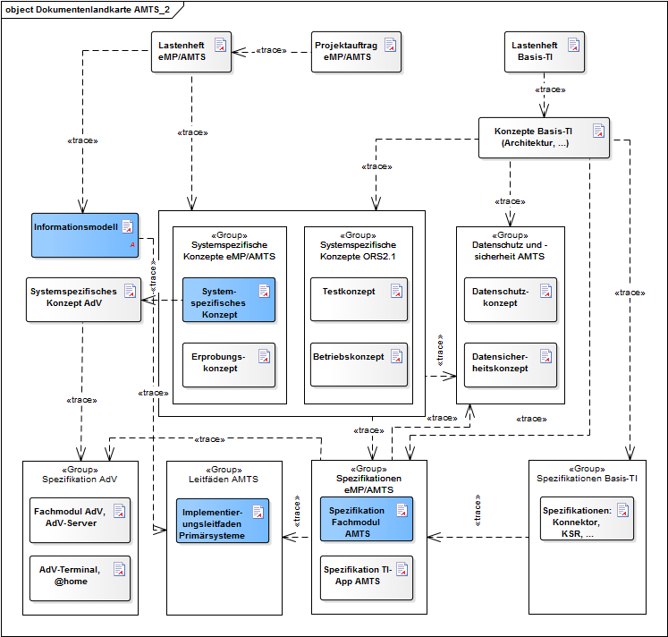
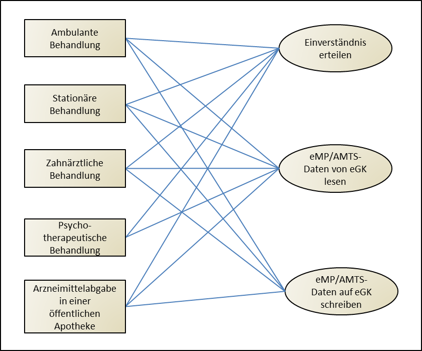
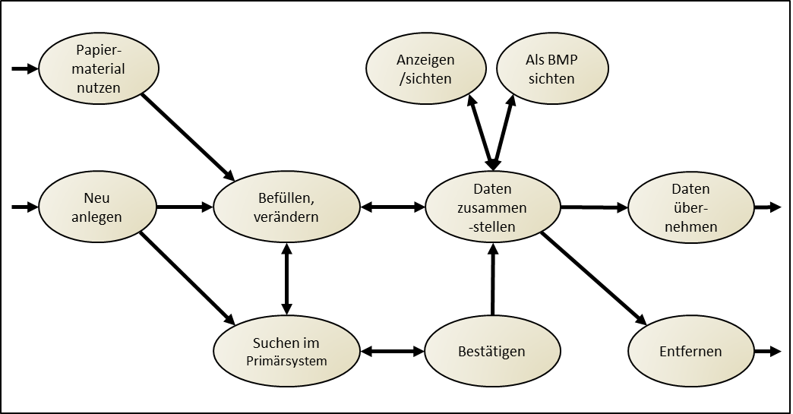
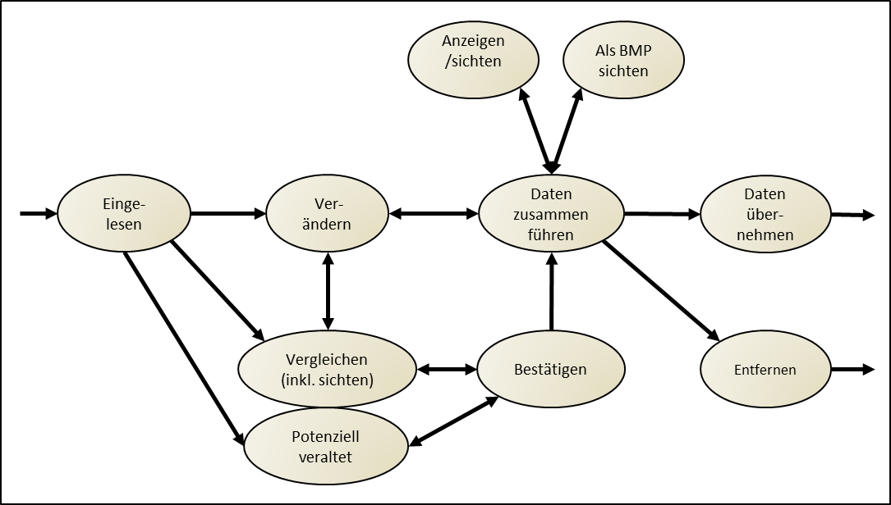
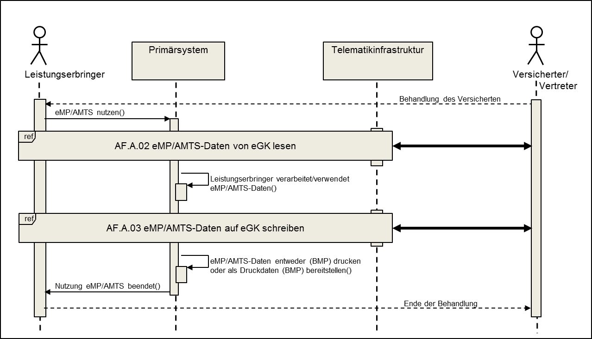
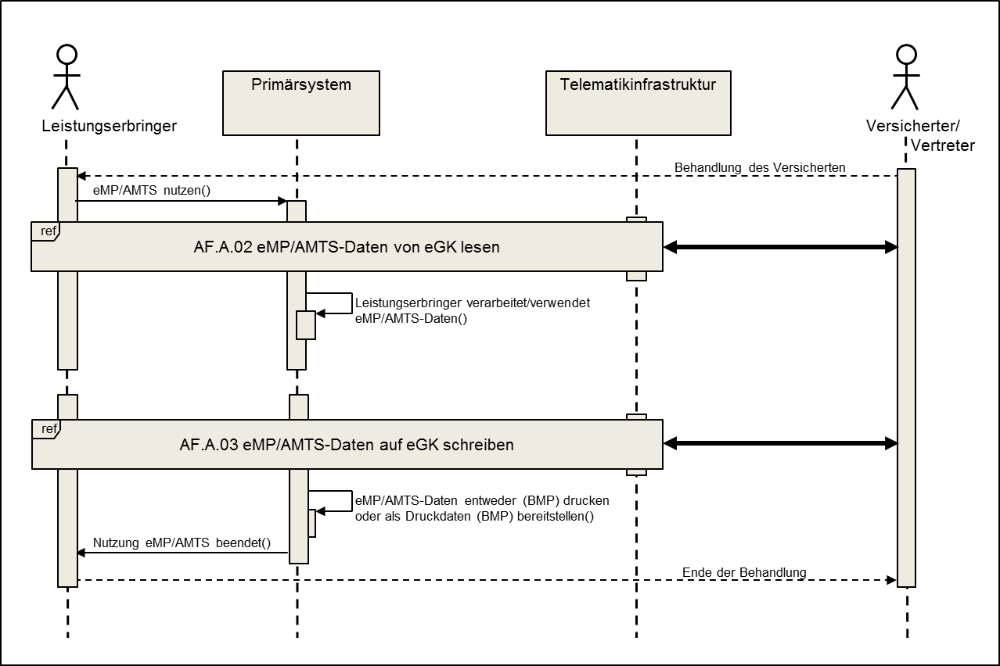
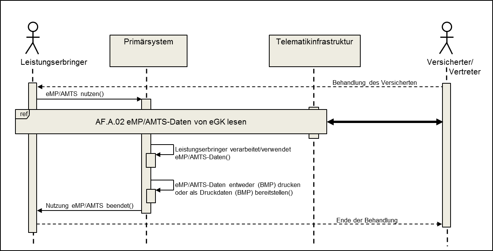
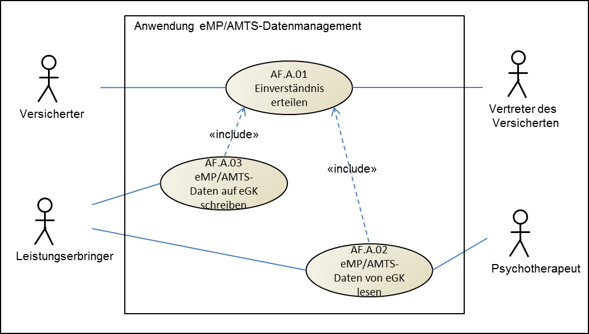
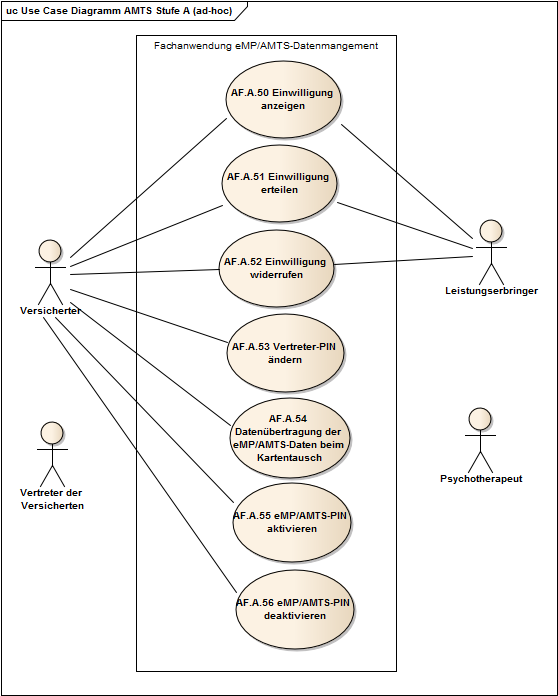
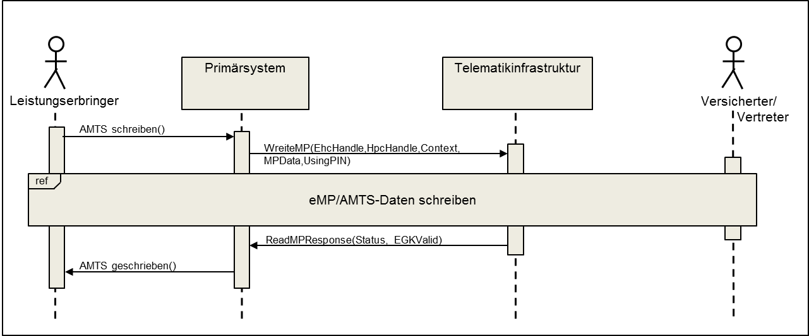

Elektronische Gesundheitskarte und Telematikinfrastruktur
Implementierungsleitfaden Primärsysteme –
elektronischer Medikationsplan/AMTS-Datenmanagement (Stufe A)
| Version | 1.7.0 |
| Revision | 571635 |
| Stand | 12.11.2020 |
| Status | freigegeben |
| Klassifizierung | öffentlich |
| Referenzierung | gemILF_PS_AMTS |
Änderungen zur Vorversion
Anpassungen des vorliegenden Dokumentes im Vergleich zur Vorversion können Sie der nachfolgenden Tabelle entnehmen.
Dokumentenhistorie
| Version |
Stand |
Kap./ Seite | Grund der Änderung, besondere Hinweise |
Bearbeitung |
|---|---|---|---|---|
| 1.0.0 |
05.10.17 |
freigegeben |
gematik |
|
| 1.1.0 |
18.12.17 |
1.4 4.2.1 5.2, 5.2.2, 5.3.2 6.3.11 6.3.12 |
Berechtigungsregel Psychotherapeuten Ergänzung im Einverständnis-Prozess Ergänzung und Korrektur Anforderungen (Harmonisierung mit dem BMP V2.4, Datenredundanz, Bitmaske) Fehlerkorrektur in Tabelle 23 und 25 |
gematik |
| 1.2.0 |
04.05.18 |
Einarbeitung P15.2, 15.4 |
gematik |
|
| 1.2.1 |
13.07.18 |
Einarbeitung P15.6 |
gematik |
|
| 1.3.0 |
26.10.18 |
Einarbeitung P15.9 |
gematik |
|
| 1.4.0 | 15.05.19 | Einarbeitung P18.1 |
gematik |
|
| 1.5.0 | 28.06.19 | Einarbeitung P17.4 | gematik | |
| 1.6.0 | 02.10.19 | Einarbeitung P20.3 | gematik | |
| 1.7.0 |
12.11.20 |
Einarbeitung P22.2 |
gematik |
Hinweis zur Erstellung des Leitfadens
Der Leitfaden wurde mit freundlicher Unterstützung (Stellungnahme) der Verbände
erstellt.
|
|
|---|
Der Leitfaden definiert fachliche Anforderungen und gibt Handlungsanweisungen und
-empfehlungen, wie Anwendungssysteme in verschiedenen Anwendungsszenarien (Use Cases) die Prozesse des eMP/AMTS-Datenmanagements technisch und prozedural einbinden. Damit soll erreicht werden, dass ein hohes Maß an Daten- und Anwendungskonformität (und damit eine geringe Fehlerrate) und an Akzeptanz bei der Nutzung der Anwendung erzielt wird.
Daher beinhaltet der ILF
Damit definiert der Implementierungsleitfaden die minimale Konformanz, die die hierin betroffenen Primärsysteme erbringen müssen, unabhängig davon, ob sie nach § 31a SGB V zertifiziert oder konform sind, um für das eMP/AMTS-Datenmanagement konform zu sein.
Der Implementierungsleitfaden für eMP/AMTS-Datenmanagement richtet sich an Hersteller von Primärsystemen (Praxisverwaltungssystem, Krankenhausinformationssystem bzw. deren Anwendungskontext-spezifischen Subsysteme, Zahnarztsoftware, psychotherapeutische Primärsoftware, Apothekenverwaltungssystem) im Rahmen der Erprobung des Online-Rollout (2.1).
Dieses Dokument enthält informative Anforderungen für Primärsysteme. Der Gültigkeitszeitraum der vorliegenden Version und deren Anwendung in Zulassungs- oder Abnahmeverfahren wird durch die gematik GmbH in gesonderten Dokumenten (z. B. Dokumentenlandkarte, Produkttypsteckbrief, Leistungsbeschreibung) festgelegt und bekannt gegeben.
Wichtiger Schutzrechts-/Patentrechtshinweis
Der nachfolgende Leitfaden ist von der gematik allein unter technischen Gesichtspunkten erstellt worden. Im Einzelfall kann nicht ausgeschlossen werden, dass die Implementierung der Leitfaden in technische Schutzrechte Dritter eingreift. Es ist allein Sache des Anbieters oder Herstellers, durch geeignete Maßnahmen dafür Sorge zu tragen, dass von ihm aufgrund des Leitfadens angebotene Produkte und/oder Leistungen nicht gegen Schutzrechte Dritter verstoßen und sich ggf. die erforderlichen Erlaubnisse/Lizenzen von den betroffenen Schutzrechtsinhabern einzuholen. Die gematik GmbH übernimmt insofern keinerlei Gewährleistungen.
Das vorliegende Dokument ist Teil des Dokumentenpaketes eMP/AMTS und leitet sich von der Spezifikation des Fachmoduls AMTS ab, siehe Abbildung 1: Dokumentenlandkarte eMP/AMTS.

Abbildung 1: Dokumentenlandkarte eMP/AMTS
Das Dokument beschreibt die Nutzung der Schnittstellen zum Fachmodul AMTS, zum Konnektor und die damit verbundenen Anwendungsfälle im Primärsystem. Darüber hinausgehende Anwendungsfälle, die sich nicht dieser Schnittstellen bedienen, sind nicht Bestandteil dieses Dokumentes.
Dieses Dokument verweist auf den Implementierungsleitfaden für Primärsysteme [gemILF_PS], welcher die Nutzung von Komponenten und Schnittstellen der Telematikinfrastruktur (z. B. Verbindungsaufbau zum Konnektor) durch Primärsysteme von Leistungserbringern beschreibt. Insbesondere für Entwickler von Primärsystemen sind die Grundlagen aus dem Leitfaden für die Schnittstellenimplementierung zur Telematikinfrastruktur unverzichtbar.
Der Fokus dieses Dokumentes liegt bei der Definition der fachlichen Anforderungen, der Beschreibung von Abläufen zur Verarbeitung der Datensätze der Fachanwendung eMP/AMTS im Primärsystem, deren Struktur das Informationsmodell eMP/AMTS spezifiziert, und dem Verständnis einer gemeinsamen Fachlogik. Beschreibungen der internen Abläufe der genannten Schnittstellen sind in der Spezifikation des Fachmoduls AMTS [gemSpec_FM_AMTS] und des Konnektors [gemSpec_Kon] zu finden. Anforderungen an andere Produkttypen sind nicht Bestandteil dieses Dokuments.
Nicht Gegenstand des Implementierungsleitfadens sind
Im vorliegenden Implementierungsleitfaden werden in Kapitel 6 die einzelnen Anwendungsfälle der Fachanwendung eMP/AMTS im Primärsystem beschrieben und daraus Anforderungen abgeleitet. Die Abläufe der Anwendungsfälle verdeutlichen den Umgang mit den Operationen des Fachmoduls AMTS und des Konnektors. Ferner beschreiben sie die Verwendung und die Reihenfolge der Kommandos, über die das Primärsystem mit dem Kartenterminal die Datenübertragung steuert.
Die Beschreibung der Anwendungsfälle erfolgt nach folgendem Muster:
Die Tabellen zur Anwendungsfallbeschreibung beinhalten neben dem Namen eine Kurzbeschreibung und einen Standardablauf. Darüber hinaus werden Vor- und Nachbedingungen, Auslöser sowie fachliche Akteure angegeben.
Der Standardablauf beschreibt die Durchführung des Anwendungsfalls im Erfolgsfall und besteht aus nummerierten Aktivitäten. Die Umsetzung des Standardablaufs ist in der weiteren Tabelle ausführlicher erläutert. Allgemeine Vorgaben zur Fehlerbehandlung im Primärsystem und Verweise auf die generischen und spezifischen Fehlermeldungen des Fachmoduls AMTS sind im Kapitel 8.1 enthalten.
Sequenzdiagramme der Anwendungsfälle beinhalten neben der Darstellung des Standardablaufs auch Interaktionen des Primärsystems mit anderen Akteuren und Nachbarsystemen. Interne Prozesse der beteiligten Akteure und Nachbarsysteme werden nicht in den Diagrammen dargestellt. Diese Diagramme verdeutlichen den Nachrichtenaustausch zwischen dem Primärsystem und den von der Telematikinfrastruktur angebotenen Außenschnittstellen.
Anforderungen als Ausdruck normativer Festlegungen werden durch eine eindeutige ID in eckigen Klammern sowie die dem RFC 2119 [RFC2119] entsprechenden, in Großbuchstaben geschriebenen deutschen Schlüsselworte MUSS, DARF NICHT, SOLL, SOLL NICHT, KANN gekennzeichnet.
Anforderungen werden im Dokument wie folgt dargestellt:
<AFO-ID> - <Titel der Afo>
Text / Beschreibung
[<=]
Dabei umfasst die Anforderung sämtliche zwischen Afo-ID und Textmarke [<=] angeführten Inhalte.
Hinweise zur Nomenklatur:
Schnittstellen-, Operations-, Parameternamen oder XML-Elemente/-Attribute werden in nicht-proportionaler Schriftart dargestellt.
Beispiele werden hervorgehoben dargestellt. Bei der Auswertung der (informativen) Beispiele ist zu beachten, dass die zugrunde liegenden XML-Schemadateien und WSDLs versioniert sind und einem Releasemanagement unterliegen. Eine Orientierung über die an der Konnektorschnittstelle zu verwendenden Schemaversionen und Namensräume bietet [gemSpec_Kon#AnhD].
Dieser Implementierungsleitfaden beschreibt die Nutzung der Schnittstellen der dezentralen Umgebung der Telematikinfrastruktur (Fachmodul AMTS (Spezifikation Fachmodul AMTS [gemSpec_FM_AMTS]) und des Konnektors (Spezifikation Konnektor [gemSpec_Kon])) durch das Primärsystem von berechtigten Akteuren im Rahmen der Fachanwendung eMP/AMTS.
Akteure interagieren mit den in diesem Dokument vorgestellten Anwendungsfällen. Sie greifen mittels des Primärsystems auf eMP/AMTS-Daten, die sich auf der eGK des Versicherten befinden, und auf den Datenbestand des Primärsystems zu.
Berechtigte Akteure sind diejenigen Personen, die den Anwendungsfall erfolgreich durchführen können, für die Zugriffsrechte im Fachmodul AMTS definiert ist und evtl. von anderen Personen mit elektronischem Heilberufsausweis (HBA) autorisiert sind. Über ihre Rolle, die technisch durch das Zugriffsprofil ihrer Smartcard repräsentiert wird, erhalten die Akteure die benötigte Berechtigung zum Zugriff auf den eMP/AMTS-Datensatz der eGK.
Berechtigte Akteure können folgende sein: der Versicherte, der Vertreter des Versicherten, Ärzte, Zahnärzte, Mitarbeiter medizinischer Institution, Nicht-ärztlicher Psychotherapeut, Apotheker und Mitarbeiter Apotheke.
Direkt vom Primärsystem erreichbare Systeme sind:
Konnektor einschließlich Fachmodul AMTS
Das Primärsystem bedient sich als Clientsystem an den Außenschnittstellen des Fachmoduls AMTS und des Konnektors. Das Fachmodul AMTS ist integraler Bestandteil des Konnektors.
Mittels des Konnektors werden folgende Systeme bedient:
Stationäres Kartenterminal
Das Primärsystem kann nicht direkt auf das stationäre Kartenterminal zugreifen, in dem die eGK des Versicherten steckt, sondern nur mittels des Fachmoduls AMTS bzw. des Konnektors. Somit stellt das stationäre Kartenterminal ein weiteres beteiligtes System dar, auf welches das Primärsystem nur mittelbar zugreifen kann, siehe [gemILF_PS].
Es wird vorausgesetzt, dass das Primärsystem betriebsbereit ist. Dieses soll in der Lage sein, dem berechtigten Akteur die vollständige Nutzung der Fachanwendung eMP/AMTS zu gewährleisten. Um das zu erreichen, muss das Primärsystem folgende Voraussetzungen erfüllen:
Im Folgenden werden diese Voraussetzungen grob beschrieben, es wird auf gematik-eigene Spezifikationen verwiesen, wo diese Voraussetzungen ausführlicher beschrieben sind. Diese Spezifikationen beinhalten auch nützliche Implementierungshilfen.
Das Primärsystem kommuniziert mit dem Konnektor auf Basis des HTTP-Protokolls. Für die sichere Datenübertragung zwischen dem Primärsystem und dem Konnektor kann Transport Layer Security (TLS) angewendet werden. Welche Transportsicherungsmethode bei dem Datenaustausch mit dem Konnektor angewendet werden kann und wie sich das Primärsystem gegenüber dem Konnektor authentisieren kann, ist in [gemILF_PS#4.1.1] beschrieben. Aus Sicherheitsgründen ist es bei der Kommunikation des Primärsystems mit dem Fachmodul AMTS und mit anderen Diensten des Konnektors zu empfehlen, die gesicherte Datenübertragung mittels TLS zu verwenden.
Die erste Verbindung wird zum Dienstverzeichnisdienst des Konnektors aufgebaut. Dabei wird der URL des Dienstverzeichnisdienstes verwendet, der bereits in der Primärsystemkonfiguration hinterlegt ist. Durch das Auslesen des Dienstverzeichnisdienstes erfährt das Primärsystem existierende Webservice-Endpunkte von weiteren Diensten des Konnektors, unter anderem auch über die Schnittstellen des Konnektors. Ausführliche Informationen und Implementierungshilfen zum Auslesen des Dienstverzeichnisdienstes sind in [gemILF_PS#4.1.2] zu finden.
Das Primärsystem kann die Schnittstellen nur über Webservice auf Basis SOAP nutzen. Das Primärsystem muss die Vorgaben zur Nutzung (WebService-Schnittstellen zum Konnektor [gemILF_PS#4.1.3]) (WebService-Schnittstellen zum Fachmodul AMTS [gemSpec_FM_AMTS#6.1.1]) von Webservice-Schnittstellen beachten.
Mittels des Systeminformationsdienstes (EventService) kann das Primärsystem konnektorspezifische Ereignisse zeitnah in einem Push-Mechanismus empfangen. Um diese Ereignisse überhaupt empfangen zu können, müssen bestimmte Ereignisse beim Systeminformationsdienst ([gemILF_PS#4.1.4]) abonniert werden. Das Primärsystem soll folgende, für die Fachanwendung eMP/AMTS relevante Ereignisse bei dem Systeminformationsdienst abonnieren:
Tabelle 1: Relevante Ereignisse für die Nutzung der Fachanwendung eMP/AMTS
| Topic Ebene1 |
Topic Ebene2 |
Topic Ebene3 |
Bedeutung |
|---|---|---|---|
| CARD |
INSERTED |
Eine Karte wurde in ein Kartenterminal gesteckt |
|
| CARD |
REMOVED |
Eine Karte wurde aus einem Kartenterminal gezogen |
|
| CARD |
PIN |
VERIFY_STARTED |
Beginn des Prozesses „PIN-Verifikation“ (die PIN-Eingabe wird entweder vom Versicherten, dem Vertreter des Versicherten oder vom Leistungserbringer verlangt) |
| CARD |
PIN |
VERIFY_FINISHED |
Ende des Prozesses „PIN-Verifikation“ |
| CT |
CONNECTED |
Die Verbindung zu einem Kartenterminal wurde hergestellt. |
|
| CT |
DISCONNECTED |
Die Verbindung zu einem Kartenterminal wurde unterbrochen. |
Wird z. B. eine eGK in ein Kartenterminal gesteckt, sendet der Konnektor ein CARD/INSERTED-Ereignis an das angemeldete Primärsystem. Das Ereignis enthält Angaben zum Kartenterminal, in dem die Karte steckt, sowie das CardHandle zur eindeutigen Identifizierung der Karte während eines Steckzyklus. Das CardHandle dient bei weiteren Konnektoraufrufen zur Adressierung der Karte.
Dies ist die schnellste Möglichkeit, ein CardHandle einer Karte zu erlangen. Es gibt eine andere Möglichkeit ([gemILF_PS#4.2]) durch das Primärsystem Kartensitzungen aufzubauen. Dabei stellt das EventService dem Primärsystem entsprechende Operationen zur Nutzung bereit. Mit diesen Operationen können vorhandene Karten abgefragt und je nach Anwendungsfall dem Akteur zur Auswahl angeboten werden. Ferner kann das Primärsystem mittels der Operationen des EventService die dem Primärsystem zugeordneten Kartenterminals abfragen. Dies kann sinnvoll sein, falls die Verfügbarkeit der Kartenterminals im Betrieb durch das Primärsystem geprüft werden soll.
Für eine Nutzung der Fachanwendung eMP/AMTS wird vorausgesetzt, dass ein HBA oder eine SMC-B freigeschaltet (Freischaltung von Karten [gemILF_PS #4.1.5.3]) ist. Dies wird auch als „erhöhter Sicherheitszustand“ bezeichnet. Dieser ist in Abhängigkeit vom Anwendungsfall und vom Verwendungszweck der einzelnen Operationen der Fachanwendung eMP/AMTS erforderlich. Bei erstmaliger Benutzung der PIN.CH des HBA können sie sich noch im Transportstatus befinden. In diesem Fall kann das Primärsystem auf Anforderung des Akteurs den PIN-Status des HBA abfragen (Beschreibung von Operationen des Kartendienstes zur Abfrage des Kartenstatus und zur PIN-Änderung [gemSpec_Kon#4.1.5.5]) und die Änderung der PIN durchführen.
Eine PIN.CH-Initialisierung für eGK G2 ist nicht notwendig, da die Karte mit einer Echt-PIN an den Versicherten ausgeliefert wird.
Operationen des Konnektors verlangen vom Primärsystem die Übergabe eines Aufrufkontextes, der aus Angaben zum Mandant (MandantId), Arbeitsplatz (WorkplaceId) und Primärsystem (ClientSystemId) besteht. Die Identifikation des Benutzers (UserId) wird in dem Aufrufkontext bei der Beteiligung eines HBA angegeben.
Mittels dieser Parameter kann der Konnektor die Aufrufberechtigung des Primärsystems überprüfen. Diese Parameter sind im Primärsystem konfiguriert. In der Konfiguration lässt sich die Zuordnung zwischen Mandanten, Karten, Arbeitsplätzen und Kartenterminals verwalten sowie die eindeutige Zuordnung zwischen Heilberuflern und ihren UserIDs. Die Zuordnung dieser Daten wird auch im Konnektor administriert (Aufbau des Aufrufkontextes [gemILF_PS#3.3]) und sie muss der Konfiguration im Primärsystem entsprechen.
Für den Aufruf der Operation an der Außenschnittstelle des Fachmoduls AMTS bzw. des Konnektors wird vorausgesetzt, dass das Primärsystem in der Lage ist, den Aufrufkontext gemäß [gemILF_PS#3.3.1] aufzubauen und die Parameter dieses Aufrufkontextes mit entsprechenden Daten aus der eigenen Konfigurationsverwaltung zu befüllen.
Für die in Kapitel 5 beschriebenen Anwendungsprozesse und in Kapitel 6 beschriebenen Anwendungsfälle gelten übergreifende Vorbedingungen gemäß der Systemlösung eMP/AMTS ([gemSysL_AMTS#4.1]), dem Implementierungsleitfaden Primärsysteme [gemILF_PS], sowie die folgenden Vorbedingungen:
Beim Zugriff auf den eMP/AMTS-Datensatz der eGK des Versicherten sind Berechtigungsregeln maßgeblich, die vom jeweiligen fachlichen Akteur abhängig sind. Die Berechtigungsregeln für einzelne Akteure (siehe Tabelle 2) werden über das Fachmodul AMTS gesteuert.
Tabelle 2: Tab_ILF_AMTS_028 Berechtigungsmatrix „Berechtigungen der Anwendung eMP/AMTS für Leistungserbringer“
|
Anwendungsfälle |
Berechtigter Akteur
|
||||
|---|---|---|---|---|---|
| Arzt/ Zahnarzt |
Mitar- beiter medizi- nische Institu- tion |
Apo- theker |
Mitar-beiter Apo- theke |
Psycholo- gischer Psycho- therapeut |
|
| eMP/AMTS-Daten von eGK lesen |
xA/xVP
|
xA/xVP
|
xA/xVP
|
xA/xVP
|
xA/xVP
|
| eMP/AMTS-Daten auf eGK schreiben |
xA/xVP
|
xA/xVP
|
xA/xVP
|
xA/xVP
|
|
| Einwilligung erteilen |
xA
|
xA
|
xA
|
xA
|
|
| Einwilligung anzeigen |
xA
|
xA
|
xA
|
xA
|
xA
|
| Einwilligung widerrufen |
xA
|
xA
|
xA
|
xA
|
|
| Vertreter-PIN ändern |
xA
|
xA
|
xA
|
xA
|
|
| Datenübertragung bei Kartentausch durchführen |
xA
|
xA
|
xA
|
xA
|
|
| eMP/AMTS-PIN aktivieren |
xA
|
xA
|
xA
|
xA
|
xA
|
| eMP/AMTS-PIN deaktivieren |
xA
|
xA
|
xA
|
xA
|
xA
|
Beschreibung: xA = Berechtigt nach Autorisierung durch den Versicherten; xVP = Berechtigt nach Autorisierung durch den Vertreter; (leer) = keine Berechtigung
Die Fachmodule im EHealth-Konnektor verwenden ausdifferenzierte Berechtigungsregeln zur Kontrolle der Zugriffe auf die medizinischen Daten der eGK. Die anwendungsspezifischen Implementierungsleitfäden machen hierzu detaillierte Vorgaben.
Auf Berufsgruppen bezogene Rollendefinitionen werden technisch in den Zugriffsregeln der SMC-Bs und HBA der jeweiligen Berufsgruppen abgebildet. Anhand dieser technischen Zugriffsregeln werden im Zuge der Card-to-Card-Authentisierung zwischen eGK einerseits und SMC-B bzw. HBA andererseits die Anwendung auf der eGK ggf. freigeschaltet.
Die Berechtigungen der SMC-Bs einer Berufsgruppe sind im Allgemeinen von den Berechtigungen der HBAs einer Berufsgruppe abgeleitet, weil sie ihre SMC-B selbst nutzen und die Heilberufler auch ihre Gehilfen im Allgemeinen dafür autorisieren können, auf die Anwendungen der eGK mit den gleichen Rechten zuzugreifen.
Eine Ausnahme hiervon liegt ausschließlich im Falle des Psychotherapeuten vor, der seine Gehilfen nicht komplett für die Zugriffsmöglichkeiten autorisieren darf, mit denen die SMC-B ausgestattet ist.
Bei vorhandener Einwilligung kann der berechtigte Akteur auf die eGK des Versicherten zugreifen, nachdem der Versicherte durch die PIN-Eingabe sein Einverständnis erklärt hat. Bei der Aufforderung des Versicherten oder des Vertreters des Versicherten, die entsprechende PIN am Kartenterminal einzugeben, kann der Versicherte oder dessen Vertreter selbst entscheiden, ob er dem Akteur den Zugriff auf seine eGK erteilen will. Durch diesen PIN-Schutzmechanismus wird verhindert, dass beliebige Akteure direkt auf die eMP/AMTS-Daten zugreifen können.
Im Falle einer abgeschalteten PIN kann der Zugriff direkt nach Stecken der eGK erfolgen.
Bei der Auslieferung der eGK G2 an die Versicherten verfügt die Karte über eine Echt-PIN und somit ist es nicht erforderlich die PIN.CH dieser Karte zu initialisieren.
Im Falle eines „zeitversetzten“ Schreibens der eMP/AMTS-Daten, also dann, wenn die eGK nach dem Lesen und noch vor dem eigentlichen Schreibvorgang aus dem Kartenterminal gezogen wird, muss trotz deaktivierter MRPIN.AMTS die Anwendung erneut freigeschaltet werden.
Fordert das Kartenterminal den Versicherten, den Vertreter des Versicherten oder den Arzt zur PIN-Eingabe auf, erhält das Primärsystem eine entsprechende Ereignismeldung vom Konnektor. Für den Erhalt dieser Ereignismeldung abonniert das Primärsystem Ereignisse (Topics) der Tabelle 1 bei dem Systeminformationsdienst des Konnektors.
Mittels der Ereignismeldungen meldet der Konnektor dem Primärsystem nicht nur die Aufforderung des Versicherten oder des Vertreter des Versicherten zur PIN Eingabe, sondern auch Informationen über den Status der Karte, die schon unmittelbar zum Zeitpunkt des Steckens zur Verfügung gestellt werden können. Um diese Informationen zeitnah zu empfangen, soll das Primärsystem die Anforderung [gemILF_PS#TIP1-A_4970] umsetzen.
Antwortet das Fachmodul AMTS oder der Konnektor mit einer Fehlermeldung, muss das Primärsystem diese Fehlermeldung verarbeiten und den Akteur über den Inhalt der Fehlermeldung informieren. Angaben zur Fehlerverarbeitung sind in Kapitel 8.1 enthalten.
Dieses Kapitel beschreibt die Anwendungsprozesse der Fachanwendung eMP/AMTS entsprechend den Kontexten:
aus Sicht des berechtigten Akteurs bezüglich der Verarbeitung der eMP/AMTS-Daten des Versicherten im Primärsystem. Das Kapitel stellt Anforderungen an die Funktionalität des Primärsystems und gibt Implementierungshilfen.
Für jeden Anwendungsprozess erfolgt eine Detaillierung mittels einer tabellarischen Beschreibung. Der Standardablauf einzelner Anwendungsprozesse ist durch ein Sequenzdiagramm dargestellt.

Abbildung 2: Übersicht über alle Anwendungsprozesse mit den jeweils aufzurufenden Anwendungsfällen
Für alle Anwendungsprozesse (ambulante Behandlung, stationäre Behandlung, zahnärztliche Behandlung, psychotherapeutische Behandlung und Arzneimittelabgaben in der öffentlichen Apotheke) gelten die folgenden Anforderungen für die Erstellung von eMP/AMTS-Daten.
AMTS-A_2264
Das Primärsystem MUSS das Informationsmodell zur Anwendung eMP/AMTS inkl. der beschriebenen Attribute umsetzen.
AMTS-A_2265
Das Primärsystem MUSS gewährleisten, dass die Darreichungsform nicht gleichzeitig als Freitext und als Code angegeben wird.
<=
AMTS-A_2266
Das Primärsystem MUSS gewährleisten, dass das Dosierschema nicht gleichzeitig als Freitext und in strukturierter Form angegeben wird.
<=
AMTS-A_2267
Das Primärsystem MUSS gewährleisten, dass die Dosiereinheit nicht gleichzeitig als Freitext und als Code angegeben wird.
Kategorie eMP/AMTS-Daten
AMTS-A_2269-01
Das Primärsystem MUSS gewährleisten, dass das Datum der letzten Änderung mit dem Tagesdatum des Systems belegt wird, wenn die eMP/AMTS-Daten sich ändern.
<=
Kategorie Letzter eMP/AMTS-Aktualisierung
AMTS-A_2271
Das Primärsystem MUSS gewährleisten, dass die Entität letzter eMP/AMTS-Aktualisierung an denjenigen angepasst wird, der als letztes die eMP/AMTS-Daten ändert.
<=
AMTS-A_2272
Das Primärsystem MUSS gewährleisten, dass zur Identifikation des den eMP aktualisierenden Akteurs entweder nur die lebenslange Arztnummer, die Apotheken-IDF oder das Krankenhaus–IK gesetzt wird. Zahnärztliche Primärsysteme verwenden zur Identifikation des zahnärztlichen Akteurs das Attribut lanr mit der folgenden Bildungsregel: „0“ + KZV-Nr + Abrechnungsnummer der Zahnarztpraxis (ggf. ergänzt um eine oder mehrere führende Nullen). Bei der Konkatenation der Nummern muss nach der „0“ die KZV-Nummer des Akteurs an die Stellen 2-3 gesetzt werden (ggf. mit ihrer führenden Null), und an die Stellen 4-9 die 1 - 6-stellige Abrechnungsnummer der Zahnarztpraxis, wobei sie ggf. mit einer oder mehreren führenden Nullen aufgefüllt werden muss. Beispielresultat: „004006789“. <=
Kategorie Medikationseintrag
AMTS-A_2273
Das Primärsystem MUSS gewährleisten, dass Medikationseinträge vom Typ „Sonstige Hinweise“ kein Kennzeichen DM erhalten.
<=
AMTS-A_2274
Das Primärsystem MUSS gewährleisten, dass für einen Medikationseintrag das Datum Status „beendet“ gesetzt ist, wenn die Einnahme des enthaltenen Arzneimittels im Primärsystem als beendet angegeben wurde. Das Primärsystem MUSS das entsprechende Datum eintragen.
<=
AMTS-A_2275
Das Primärsystem MUSS gewährleisten, dass für einen Medikationseintrag das Datum Status „beendet“ mit Werten in der Zukunft gesetzt werden kann.
<=
Kategorie Ausdruck – Transformation BMP
AMTS-A_2276
Das Primärsystem MUSS gewährleisten, dass zu Medikationseinträgen im Status „beendet“, deren „Datum Status „beendet“„ älter als das Tagesdatum ist, ein Hinweis für den Akteur generiert wird.
<=
Kategorie Neuanlage
AMTS-A_2277
Das Primärsystem MUSS gewährleisten, dass bei neu angelegten eMP/AMTS-Daten das Länderkennzeichen für Deutschland gesetzt wird.
<=
AMTS-A_2278
Das Primärsystem MUSS gewährleisten, dass für Stufe A ausschließlich das Sprachkennzeichen für Deutsch verwendet wird.
<=
Hinweis: Der vorliegende Implementierungsleitfaden gilt nur für Stufe A, die folgenden Ausbaustufen sind hier nicht beschreiben.
AMTS-A_2279-01
Das Primärsystem MUSS gewährleisten, dass bei einem neu angelegten Medikationseintrag das Ersterfassungsdatum mit dem Tagesdatum des Systems belegt wird.
Kategorie Kompatibilität – auch für nicht BMP-Einträge
AMTS-A_2280
Das Primärsystem MUSS gewährleisten, dass sich alle, in den eMP/AMTS-Daten enthaltenen, Medikationseinträge ohne den Status „beendet“ noch in einen BMP überführen lassen.
<=
AMTS-A_2281
Das Primärsystem SOLL gewährleisten, dass sich alle, in den eMP/AMTS-Daten enthaltenen, Medikationseinträge mit dem Status „beendet“, deren Datum in der Zukunft liegt, noch in einen BMP überführen lassen.
<=
Hinweis: Abwärtskompatibilität zum BMP, um einen maximal dreiseitigen Ausdruck erzeugen zu können.
AMTS-A_2282
Das Primärsystem MUSS gewährleisten, dass verschiedene Versionen des BMP im eMP verarbeitet werden können. Im eMP MUSS das Primärsystem die BMP-Version als Versionsnummer des zugrunde liegenden BMP dokumentieren (attribute name="v"). <=
Kategorie Codierung
AMTS-A_2283
Das Primärsystem MUSS gewährleisten, dass bei Angabe eines Codes stets das zugehörige Codesystem angegeben ist.
<=
Kategorie Datenvolumen
AMTS-A_2284
Das Primärsystem MUSS während der Zusammenstellung der Daten für die Anwendung eMP/AMTS Überschreitungen des Datenvolumens verhindern.
<=
Hinweis: Der zur Verfügung stehende Netto-Speicherplatz für die Anwendung eMP/AMTS beträgt 13.506 Byte, wobei die kompletten eMP/AMTS-Daten intern vor der Speicherung noch komprimiert werden.
AMTS-A_2691
Das Primärsystem MUSS alle Druckkennzeichen für Geschlecht, Allergien und Unverträglichkeiten, Schwangerschaft, Stillend, Gewicht, Größe, Kreatininwert und Parameterfreitext befüllen, wenn die jeweiligen Merkmale gesetzt sind in Abhängigkeit davon, ob ein Ausdruck / Nutzung für den BMP vorgesehen ist.
<=AMTS-A_2692
Das Primärsystem MUSS beachten, dass die Instanz-ID des BMP vom Datentyp GUID ist ohne Bindestriche.
<=AMTS-A_2693
Das Primärsystem MUSS das Druckkennzeichen für Geschlecht entsprechend der BMP-Nutzung setzen.
<=AMTS-A_2694
Das Primärsystem KANN den Aufbau und die Prüfziffer der LANR beachten.
<=AMTS-A_2695
Das Primärsystem KANN den Aufbau und die Prüfziffer der IDF beachten.
<=AMTS-A_2696
Das Primärsystem KANN die aktuellen Werte des PLZ-Kataloges beachten.
<=AMTS-A_2697
Das Primärsystem MUSS die Syntax-Vorgaben für E-Mail-Adressen entsprechend Anhang 1 der BMP-Spezifikation einhalten.
<=AMTS-A_2698
Das Primärsystem MUSS beachten, dass nicht mehr als 2 Tildezeichen für den Parameterfreitext verwendet werden.
<=AMTS-A_2699
Das Primärsystem MUSS sicherstellen, dass ab dem 2. Block entweder eine Überschrift als Code oder als Freitext gewählt werden kann.
<=AMTS-A_2700
Das Primärsystem MUSS sicherstellen, dass eine Überschrift entweder codiert oder als Freitext angegeben wird.
<=AMTS-A_2701
Das Primärsystem MUSS sicherstellen, dass für den eMP/AMTS-Datensatz die aktuellen PZNs analog der Arzneimitteldatenbank zu verwenden sind, wobei die führenden Nullen entfernt werden.
<=AMTS-A_2702
Das Primärsystem MUSS beachten, dass nicht mehr als 1 Tildezeichen für den Hinweis verwendet wird.
<=AMTS-A_2703
Das Primärsystem MUSS beachten, dass nicht mehr als 1 Tildezeichen für den Behandlungsgrund verwendet wird.
<=AMTS-A_2704
Das Primärsystem MUSS beachten, dass nicht mehr als 1 Tildezeichen für die gebundene Zusatzzeile verwendet wird.
<=AMTS-A_2705
Das Primärsystem MUSS beachten, dass nicht mehr als 1 Tildezeichen für die Freitextzeile verwendet wird.
<=AMTS-A_2706
Das Primärsystem MUSS beachten, dass nicht mehr als 1 Tildezeichen für die Rezeptur verwendet wird.
<=Prämisse
Zusätzlich wird davon ausgegangen, dass in allen Primärsystemen, bis auf die Apothekenverwaltungssysteme, die Versicherten-ID des Versicherten vor einem Schreiben von eMP/AMTS-Daten separat ermittelt wurde, z. B. im Rahmen des Einlesens der eGK zur Klärung des Versicherungsanspruches.
Es ergeben sich folgende Anforderungen im Standardablauf der Anwendungsfälle:
AMTS-A_2285
Das Primärsystem MUSS den Anwendungsfall AF.A.02 eMP/AMTS-Daten von der eGK lesen umsetzen.
<=AMTS-A_2287
Das Primärsystem MUSS bei aktualisierten eMP/AMTS-Daten entweder die eMP/AMTS-Daten (als BMP) drucken oder eMP/AMTS-Daten als Druckdatei bereitstellen.
<=AMTS-A_2288
Das Primärsystem MUSS den Akteur über das erfolgreiche Ende der Nutzung der eMP/AMTS-Daten des Versicherten informieren, wenn der Anwendungsfall ohne Fehler (=erfolgreich) beendet wurde.
<=AMTS-A_2495
Das Primärsystem MUSS das XML-Schema des eMP/AMTS-Datenmanagements [AMTS_Document.xsd] umsetzen.
<=AMTS-A_2496
Das Primärsystem MUSS ein oder mehrere Schema-Versionen des eMP/AMTS-Datenmanagements parallel verarbeiten/umsetzen können.
<=AMTS-A_2497
Das Primärsystem MUSS in Abweichung von den Vorgaben des BMP beim eMP/AMTS-Datenmanagement mehr als 3 Wirkstoffe (Wirkstoffbezeichnung oder Wirkstoffcode) und zugehörige Wirkstärken (Wirkstärke_Freitext oder Wirkstärke_strukturiert) pro Medikationseintrag verarbeiten können.
<=Kategorie Codes
AMTS-A_2498
Das Primärsystem MUSS sicherstellen, dass PZNs achtstellig, also mit den führenden Nullen angezeigt, gespeichert und weiterverarbeitet werden.
<=AMTS-A_2499
Das Primärsystem MUSS sicherstellen, dass Dezimalzahlen mindestens eine Stelle vor dem Komma, das Komma als Dezimalstelle und der Punkt als Tausendertrennzeichen angezeigt, gespeichert und weiterverarbeitet werden.
<=AMTS-A_2710
Das Primärsystem MUSS vor dem Schreiben der eMP/AMTS-Daten prüfen, ob sich aus allen Datenfeldern, die sich aus Medikationseinträgen mit dem Kennzeichen BMP ergeben, ein BMP erzeugen lässt, ansonsten ist der Anwender darauf hinzuweisen und bei der Behebung des Problems geeignet zu unterstützen.
<=Hinweis: Die Speicherplatzlimitierung des Carriers des 2D-Barcodes kann dazu führen, dass sich nicht alle Inhalte von BMP-gekennzeichneten Einträgen in einen Ausdruck wandeln lassen. Dies soll im Vorfeld verhindert werden.
Für alle Anwendungsprozesse (ambulante Behandlung, stationäre Behandlung, zahnärztliche Behandlung und Arzneimittelabgaben in der öffentlichen Apotheke) außer der psychotherapeutischen Behandlung gelten die folgenden Anforderungen für die Erstellung von eMP/AMTS-Daten.
Es ergeben sich folgende Anforderungen:
AMTS-A_2286
Das Primärsystem MUSS den Anwendungsfall AF.A.03 eMP/AMTS-Daten auf eGK schreiben umsetzen.
<=Die allgemeinen Anforderungen aus 5.4.1 gelten für die Ersterstellung, aber nicht ausschließlich.
Hilfestellung bei Strukturierung von Anforderungen
In den Phasen der Ersterstellung sind unterschiedliche Aktivitäten möglich, bevor ein beliebiges Datum übernommen wird. Die Abläufe der unterschiedlichen Aktivitäten eines Dateneintrages folgen dem folgenden Hilfsdiagramm (Abbildung 3: Hilfsdiagramm möglicher Aktivitäten während der Ersterfassung zum Zwecke der Strukturierung der Anforderungen), welches nicht normativ ist, sondern dem Zwecke dient, die folgenden Anforderungen zu strukturieren. Das Hilfsdiagramm erhebt keinen Anspruch an Vollständigkeit der Abläufe in einem Primärsystem, sondern dient einzig der Zuordnung und Vervollständigung der Anforderungen.
Ein einfacher Ablauf eines zu erstellenden Datums durchläuft folgende Schritte:
Nach dem Neu-Anlegen eines Datums, dem Befüllen oder Verändern des Datums, wird das Datum zusammenstellen und anschließend wird das Datum mit dem Ziel der Speicherung in den eMP/AMTS-Daten auf der eGK übernommen. Alternativ zum Neu-Anlegen lassen sich Daten von Papiermaterial nutzen. Das Befüllen bzw. Verändern eines Datums kann durch eine Suche im Primärsystem unterstützt werden, wobei die resultierenden Daten vor der Zusammenstellung zu bestätigen sind. Die zusammengestellten Daten können gesichtet werden, wobei ergänzend die Ansicht in Form des BMP möglich sein sollte. Bevor die zusammengestellten Daten übernommen werden, lassen sich dieses noch entfernen.

Abbildung 3: Hilfsdiagramm möglicher Aktivitäten während der Ersterfassung zum Zwecke der Strukturierung der Anforderungen
Kategorie Aktion Neu anlegen
AMTS-A_2299
Das Primärsystem MUSS es dem Akteur ermöglichen, manuell (weitere) Medikationseinträge in den eMP/AMTS-Daten neu anzulegen.
<=Kategorie Aktion Befüllen/Verändern
AMTS-A_2301
Das Primärsystem MUSS die folgenden Datenfelder automatisch vorbelegen: ID, Identifikationsname, Versionsnummer des eMP, Versionsnummer des BMP, Länderkennzeichen, Sprachkennzeichen.
<=AMTS-A_2302
Das Primärsystem MUSS dem Akteur die im Primärsystem hinterlegten Medikationseinträge als Vorschlagsliste zur direkten Übernahme anbieten.
<=Hinweis: In anderen Anwendungskontexten (Verordnung, BMP, Anamnese, Arztbrief ...) sind Medikationseinträge geschaffen worden, die im Primärsystem abgelegt (hinterlegt) sind.
Kategorie Aktion Suchen
AMTS-A_2303
Das Primärsystem MUSS den Akteur bei der Suche nach weiteren Daten des Versicherten unterstützen.
<=Hinweis: Trifft hauptsächlich für Medikamente, Allergien/Unverträglichkeiten, sonstige Parameter zu.
AMTS-A_2304
Das Primärsystem MUSS den Akteur bei der Übernahme der Versichertenstammdaten in die eMP/AMTS-Daten unterstützen, z. B. bei der Neuanlage der eMP/AMTS-Daten, falls die Versichertenstammdaten im Primärsystem vorhanden sind.
<=Kategorie Kennzeichen der Medikationseinträge
AMTS-A_2305
Das Primärsystem SOLL den Akteur bei der Kennzeichnung von (im Primärsystem befindlichen) Medikationseinträgen mit dem Kennzeichen DM (Dauermedikation) unterstützen.
<=AMTS-A_2306
Das Primärsystem MUSS den Akteur bei dem Setzten des Datums Status „beendet“ von (im Primärsystem befindlichen) Medikationseinträgen unterstützen.
<=AMTS-A_2307
Das Primärsystem MUSS gewährleisten, dass kein Datum Status „beendet“ in einem Medikationseintrag gesetzt wird, wenn es sich um einen sonstigen Hinweis handelt.
<=AMTS-A_2308
Das Primärsystem MUSS es dem Akteur ermöglichen, neue Medikationseinträge an beliebiger Stelle in der Reihenfolge zu positionieren.
<=AMTS-A_2309
Das Primärsystem MUSS es dem Akteur ermöglichen, den eMP/AMTS-Daten neue Medikationseinträge hinzuzufügen:
Das Ersterfassungsdatum MUSS auf den aktuellen Zeitpunkt gesetzt werden.
Die Reihenfolge MUSS gesetzt werden, sodass alle Medikationseinträge in sich aufeinanderfolgend durchnummeriert sind.
AMTS-A_2310
Das Primärsystem MUSS den Akteur bei der Kennzeichnung als BMP-Kennzeichen von (im Primärsystem befindlichen) Medikationseinträgen unterstützen.
<=AMTS-A_2311
Das Primärsystem MUSS den Akteur bei der Kennzeichnung als historisiert von (im Primärsystem befindlichen) Medikationseinträgen unterstützen.
<=Kategorie Überschrift
AMTS-A_2312
Das Primärsystem MUSS es dem Akteur ermöglichen, an jeder Stelle in der Reihenfolge eine Überschrift zu platzieren.
<=AMTS-A_2316
Das Primärsystem SOLL den Akteur die Nutzung der Schlüsselworte nach Anhang 2 der Anlage 3 (BMP) für Überschriften ermöglichen.
<=Kategorie Leerzeile
AMTS-A_2317
Das Primärsystem SOLL den Akteur bei der Gestaltung von leeren sonstigen Hinweisen (Leerzeilen) unterstützen.
<=Hinweis: Leerzeilen können dem Akteur und dem Versicherten zur optischen Strukturierung des BMP-Ausdruckes dienen.
AMTS-A_2318
Das Primärsystem MUSS sicherstellen, dass der in der BMP-Reihenfolge letzte Medikationseintrag keine Leerzeile ist.
<=Kategorie Aktion Zusammenführen
AMTS-A_2321
Das Primärsystem MUSS im Primärsystem befindliche (mittels Suche gefundene) und durch den Akteur bestätigte Daten zusammenführen, um sie in die eMP/AMTS-Daten übernehmen, z.B. die Übernahme von Medikationen.
<=AMTS-A_2322
Das Primärsystem MUSS ermöglichen, dass der Anwender die zusammengestellten eMP/AMTS-Daten im Primärsystem manuell ändern kann.
<=Kategorie Aktion Sichten
AMTS-A_2324
Das Primärsystem MUSS es dem Akteur ermöglichen, alle zusammengestellten Medikationseinträge vor Übernahme zur Speicherung auf der eGK entsprechend der durch den Anwender festgelegten Reihenfolge zu sichten.
<=AMTS-A_2325
Das Primärsystem MUSS es dem Akteur ermöglichen, die als BMP gekennzeichneten Medikationseinträge aus den zusammengestellten Daten vor der Übernahme zur Speicherung auf der eGK zu sichten. Dies schließt die Möglichkeit zur Ansicht in Form des BMP-Ausdruckes nach § 31a SGB V ein.
<=Kategorie Aktion Entfernen
AMTS-A_2326
Das Primärsystem MUSS es dem Akteur ermöglichen, einen ausgewählten Eintrag aus den zusammengestellten eMP/AMTS-Daten entfernen zu können.
<=AMTS-A_2327
Existieren in den eMP/AMTS-Daten Medikationseinträge, die auch im Primärsystem vorhanden sind, SOLL das Primärsystem diese Einträge dem Akteur bei der Suche nach weiteren medizinischen Einträgen als bereits zusammengestellt (übernommen) kennzeichnen.
<=Kategorie Code
AMTS-A_2329
Das Primärsystem DARF NICHT den Klartext automatisch ändern, ohne dass der Akteur diese Änderung ausdrücklich bestätigt.
<=AMTS-A_2331
Wenn laut dem Informationsmodell eMP/AMTS-Datenmanagements für ein Element eines in den eMP/AMTS-Daten existierenden Eintrages ein Schlüsselverzeichnis vorgesehen ist, DARF das Primärsystem Eingaben des Akteurs NICHT akzeptieren, die nicht im Wertebereich des Schlüsselverzeichnisses liegen.
<=Hinweis: Ein Wechsel von codierten Inhalten zu freitextlichen Inhalten und umgekehrt ist hiervon unberührt, wenn alternative Darstellungsvarianten vorhanden sind.
AMTS-A_2332
Das Primärsystem MUSS den Akteur bei der Änderung von Einträgen unterstützen, indem das Primärsystem das Schlüsselverzeichnis auswertet und dem Akteur die ermittelten Werte zur Auswahl anbietet.
<=Kategorie Aktion Speichern
AMTS-A_2333
Das Primärsystem MUSS es dem Akteur ermöglichen, die Ersterfassung vorzunehmen ohne dass die eMP/AMTS-Daten auf die eGK geschrieben werden (übernommen werden).
<=AMTS-A_2334
Das Primärsystem SOLL sicherstellen, dass, wenn Medikationseinträge zu einer Überschrift gehören, deren Überschrift das Schlüsselwort „Dauermedikation“ nutzt, in diesen Medikationseinträgen das Kennzeichen „DM“ gesetzt ist bzw. nachträglich ersetzt wird.
<=AMTS-A_2335
Das Primärsystem MUSS sicherstellen, dass wenn ein Entbindungsdatum gesetzt ist, auch das Kennzeichen „schwanger“ gesetzt ist.
<=AMTS-A_2552
Das Primärsystem MUSS den Akteur bei der Befüllung der Daten der Person oder Organisationseinheit, die die letzte eMP/AMTS-Aktualisierung durchgeführt hat, unterstützen und die Daten müssen auf den Akteur verweisen.
<=AMTS-A_2711
Das Primärsystem MUSS bei der Ersterstellung eines Medikationseintrages kein Änderungsdatum setzen.
<=AMTS-A_2712
Das Primärsystem MUSS bei jeder Veränderung eines Medikationseintrages das Änderungsdatum mit dem aktuellen Tagesdatum setzen.
<=Die allgemeinen Anforderungen aus 5.4.1 und die Anforderungen für die Ersterstellung aus 5.4.2 gelten für die Aktualisierung.
Der Begriff der Zusammenführung von Daten muss bei der Aktualisierung, speziell der Aktualisierung von medizinischen Daten, als Konsolidierung verstanden werden.
Hilfestellung bei Strukturierung von Anforderungen
In den Phasen der Ersterstellung sind unterschiedliche Aktivitäten möglich, bevor ein beliebiges Datum übernommen wird. Die Abläufe der unterschiedlichen Aktivitäten eines Dateneintrages folgen dem folgenden Hilfsdiagramm (Abbildung 4: Hilfsdiagramm möglicher Aktivitäten während der Aktualisierung zum Zwecke der Strukturierung der Anforderungen), analog der Ersterstellung, welches nicht normativ ist, sondern dem Zwecke dient, die folgenden Anforderungen zu strukturieren. Das Hilfsdiagramm erhebt keinen Anspruch an Vollständigkeit der Abläufe in einem Primärsystem, sondern dient einzig der Zuordnung und Vervollständigung der Anforderungen.
Ein einfacher Ablauf eines zu aktualisierenden Datums durchläuft folgende Schritte:
Nach dem Einlesen des Datums, dem Verändern des Datums, wird das Datum mit vorhandenen, vergleichbaren Werten zusammengeführt (der Anwender wählt aus unterschiedlichen Inhalten zu einem Datumseintrag den für ihn geeigneten aus, wobei das Primärsystem den Anwender geeignet unterstützt z.B. durch vergleichende oder optische Gegenüberstellung mit Hervorheben der Unterschiede), bevor das Datum mit dem Ziel der Speicherung in den eMP/AMTS-Daten auf der eGK übernommen wird. Das Verändern eines Datums kann durch einen Vergleich mit Daten im Primärsystem unterstützt werden, wobei die resultierenden Daten vor der Zusammenstellung zu bestätigen sind. Hierbei können auch Daten, die potenziell veraltet sind (z. B. deren Ersterfassungsdatum älter als 6 Monate ist) zur Übernahme ausgeschlossen werden. Die zusammengestellten Daten können gesichtet werden, wobei ergänzend die Ansicht in Form des BMP möglich sein sollte. Anstatt die zusammengestellten Daten zu übernehmen, lassen sich diese verwerfen, werden somit entfernt.

Abbildung 4: Hilfsdiagramm möglicher Aktivitäten während der Aktualisierung zum Zwecke der Strukturierung der Anforderungen
Kategorie Allgemein
AMTS-A_2337
Das Primärsystem MUSS sicherstellen, dass eingelesene Zahlenwerte in der Form erhalten bleiben, Brüche bleiben Brüche, Dezimalzahlen bleiben Dezimalzahlen.
<=AMTS-A_2338
Das Primärsystem DARF NICHT Zahlenwerte automatisch ändern, ohne dass der Akteur diese Änderung vorgenommen hat.
<=Kategorie Aktion Verändern
AMTS-A_2339
Das Primärsystem MUSS den Akteur bei der manuellen Aktualisierung unterstützen (der Akteur ändert, ergänzt oder löscht Einträge der zuletzt gespeicherten Fassung, ggf. unter Berücksichtigung von Änderungen der eMP/AMTS-Daten, die eingelesen wurden).
<=AMTS-A_2340
Das Primärsystem MUSS die folgenden Datenfelder aus den eingelesenen eMP/AMTS-Daten für die Zusammenführung der Daten ignorieren:
ID, Identifikationsname, Versionsnummer des eMP, Versionsnummer des BMP, Länderkennzeichen, Sprachkennzeichen und das Datum letzte Änderung.
Hinweis: Da hier eine Aktualisierung stattfindet muss das Datum letzte Änderung, wie in der Ersterstellung festgelegt, auf das aktuelle Datum gesetzt werden.
Kategorie Aktion Vergleichen
AMTS-A_2341
Das Primärsystem MUSS die eingelesenen eMP/AMTS-Daten zum Vergleich mit den im PS vorhandenen Daten in die aktuelle Version des eMP/AMTS transformieren.
<=AMTS-A_2342
Das Primärsystem MUSS eingelesenen eMP/AMTS-Daten mit den im System hinterlegten Daten vergleichen und Unterschiede dem Akteur optisch anzeigen.
<=Kategorie Aktion Vergleichen/Bestätigen
AMTS-A_2344
Das Primärsystem MUSS den Akteur in geeigneter Weise bei dem Vergleich mit dem Ziel der Zusammenführung unterstützen, indem die wesentlichen Inhalte der unterschiedlichen eMP/AMTS-Daten nebeneinander dargestellt werden und indem z. B. doppelte Einträge (identische PZN oder gleicher Wirkstoff) kenntlich gemacht werden und indem für die Arzneimittel eine Sortierung nach einer geeigneten Systematik angeboten wird, so dass durch Interaktion mit dem Akteur daraus der Vorschlag für die zusammenfassenden eMP/AMTS-Daten abzuleiten ist, der zu bestätigen ist.
<=AMTS-A_2345
Das Primärsystem MUSS abgeglichene und durch den Akteur bestätigte Daten zusammenführen, um sie in die eMP/AMTS-Daten übernehmen, z. B. die Übernahme von Medikationen.
<=AMTS-A_2346
Das Primärsystem MUSS dem Akteur die Notwendigkeit zur Prüfung abweichender VSD optisch anzeigen, wenn die eingelesenen eMP/AMTS-Daten einen Versicherten-ID beinhalten.
<=Hinweis: Da eine Ersterstellung auch außerhalb der Arzt-/Zahnarztpraxis erfolgen kann, wo keine VSD vorliegen, muss bei fehlender Versicherten-ID der gesamte eMP/AMTS-Datensatz als fraglich betrachtet werden. D. h., eine Klärung ist notwendig.
Kategorie Aktion Bestätigen
AMTS-A_2347
Das Primärsystem MUSS gewährleisten, dass bei eingelesenen Medikationseinträgen des eMP-AMTS-Datenmanagements, die durch Vergleich bestätigt wurden, das Ersterfassungsdatum nicht geändert werden kann.
<=Kategorie Aktion Zusammenführen
AMTS-A_2348
Das Primärsystem MUSS es dem Akteur ermöglichen, aktuellere Attributwerte des Versicherten (Vorname, Nachname, Titel, Vorsatzwort, Namenszusatz, Geburtsdatum, Geschlecht) (aus den eingelesenen eMP/AMTS-Daten) durch Bestätigen in die zusammengeführten Daten zu übernehmen.
<=Hinweis: Da die Anwendung VSDM und eMP/AMTS-Datenmanagement entkoppelt sind, können hier ggf. die Inhalte abweichen.
AMTS-A_2349
Das Primärsystem MUSS den Akteur darauf hinweisen, wenn das Entbindungsdatum in der Vergangenheit liegt und das Entfernen/Aktualisieren dieses Attributes unterstützen.
<=AMTS-A_2350
Das Primärsystem MUSS medizinische Daten nur auf explizite Anforderung des Akteurs in die eMP/AMTS-Daten übernehmen.
<=AMTS-A_2351
Das Primärsystem MUSS gewährleisten, dass die Reihenfolge der zusammengestellten Medikationseinträge bei den gespeicherten eMP/AMTS-Daten erhalten bleibt.
<=
AMTS-A_2352
Das Primärsystem MUSS die eMP/AMTS-Daten vor dem Schreiben syntaktisch gegen das Informationsmodell prüfen.
<=AMTS-A_2353
Das Primärsystem MUSS die eMP/AMTS-Daten vor dem Schreiben überprüfen, ob deren Speichergröße den erwarteten Speicherplatz des AMTS-Containers nicht übersteigt, bei der Aktualisierung von eMP/AMTS-Daten ist der letzte ausgelesene Füllungsgrad zu berücksichtigen, so dass vor einer möglichen Überschreitung des Speicherplatzes der Akteur informiert wird.
<=Hinweis: Der zur Verfügung stehende Netto-Speicherplatz für die Anwendung eMP/AMTS beträgt 13.560 Byte, wobei die kompletten eMP/AMTS-Daten intern vor der Speicherung noch komprimiert werden.
Der Anwendungsprozess der ambulanten Behandlung ist von Primärsystemen für die ambulante Behandlung umzusetzen.
AMTS-A_2623
Das Primärsystem für die ambulante Behandlung MUSS den Anwendungsprozess AP.A.01 gemäß Tabelle 3: Tab_ILF_AMTS_001 ambulante Behandlung AP.A.01 umsetzen.
<=
Tabelle 3: Tab_ILF_AMTS_001 ambulante Behandlung AP.A.01
| Name |
Ambulante Behandlung |
|---|---|
| Kurz-beschreibung |
Vor dem Zugriff auf die eMP/AMTS-Daten des Versicherten erteilt dieser durch Vorlegen seiner eGK und der Eingabe seiner eMP/AMTS-PIN – sofern nicht abgeschaltet – sein Einverständnis zum Zugriff auf seine eMP/AMTS-Daten. Die eMP/AMTS-Daten werden vom Datenspeicher des Versicherten gelesen und in das Primärsystem für die ambulante Behandlung des Leistungserbringers überführt, so dass eine Verwendung der Daten für den ambulanten Behandlungsprozess ermöglicht wird. Der Leistungserbringer entscheidet, ob eine Aktualisierung der Daten erforderlich ist und führt diese über geeignete Dialogmasken seines Primärsystems durch. Hierbei kann er auch einen aktualisierten Ausdruck des Medikationsplans erzeugen, ggf. auch die Druckdaten dem Versicherten bereitstellen. Hinweis: Das Auslesen eines ggf. zuvor auf der eGK gespeicherten eMP/AMTS-Datensatzes kann ggf. zeitlich unabhängig hiervon erfolgt sein. Aus diesem Grund erfolgt kein Auslesen eines eMP/AMTs-Datensatzes vor der Neuanlage. |
| Auslöser |
Der Versicherte möchte die Fachanwendung eMP/AMTS-Datenmanagement zur Anlage des eMP/AMTS-Datensatzes nutzen. |
| Akteure |
Versicherter, Vertreter des Versicherten, Arzt, oder Mitarbeiter einer medizinischen Einrichtung Im Rahmen einer ambulanten Behandlung im Krankenhaus kann auch die Unterstützung durch einen Krankenhausapotheker bzw. deren pharmazeutisches Personal erfolgen. |
| Vorbedingung |
Der Versicherte hat sich bereits für die Teilnahme an der Anwendung eMP/AMTS entschieden und seine Einwilligung ist dafür auf der eGK dokumentiert. |
| Nach-bedingung |
Auf der eGK befindet sich der neu angelegte bzw. aktualisierte und valide eMP/AMTS-Datensatz. |
| Standard-ablauf |
1. Einverständnis erteilen AF.A.01 |
| 2. eMP/AMTS-Daten von der eGK lesen AF.A.02 |
|
| 3. Leistungserbringer verarbeitet/verwendet eMP/AMTS-Daten |
|
| 4. Einverständnis erteilen AF.A.01 |
|
| 5. eMP/AMTS-Daten auf eGK schreiben AF.A.03 |
|
| 6. eMP/AMTS-Daten drucken oder als Druckdaten bereitstellen |
|
| Diagramm |
Abbildung 5: Abb_ILF_AMTS_001 – Standardablauf – ambulante Behandlung |

Abbildung 5: Abb_ILF_AMTS_001 – Standardablauf – ambulante Behandlung
AMTS-A_2290
Das Primärsystem für die ambulante Behandlung MUSS es dem Akteur ermöglichen, durch Konfiguration oder andere Regelungen sicherzustellen, dass das Zusammenstellen und Schreiben der eMP/AMTS-Daten zeitlich und in getrennten Arbeitsschritten durch unterschiedliche Akteure erfolgen kann.
<=
Hinweis: Das Zusammenstellen von eMP/AMTS-Daten kann in mehreren unabhängigen Schritten erfolgen, die zeitlich nicht in direkter Aufeinanderfolge stattfinden müssen. Hier wird der Situation in Arztpraxen etc. Rechnung getragen, dass Arbeitsabläufe unterbrochen und zu einem späterem Zeitpunkt fortgesetzt werden können. Zusätzlich können mehrere berechtigte Akteure in die Zusammenstellung eingebunden sein.
AMTS-A_2291
Das Primärsystem für die ambulante Behandlung DARF es dem Akteur NICHT ermöglichen, die eMP/AMTS-Daten des Versicherten im Rahmen der Anwendung eMP/AMTS zu signieren.
<=
Kategorie Codes
AMTS-A_2295
Das Primärsystem für die ambulante Behandlung DARF NICHT Codierungen für Datenfelder erzwingen, für die keine Codierungen vorgesehen sind. Die Unterstützung der Akteure ergänzend durch Textbausteine oder Wertelisten ist empfehlenswert, DARF aber bei Freitextfeldern NICHT alleinig erfolgen.
<=
Forderungen aus § 31a SGB V Anlage 3
AMTS-A_2296
Das Primärsystem für die ambulante Behandlung MUSS die unmittelbare Erstellung und Aktualisierung der eMP/AMTS-Daten ermöglichen.
<=
AMTS-A_2297
Das Primärsystem für die ambulante Behandlung MUSS die Nutzung des eMP/AMTS-Datenmanagements unabhängig von der Rezeptschreibung oder dem Anlegen einer Verordnung aber im Kontext des BMP ermöglichen.
<=
Die allgemeinen Anforderungen aus 5.4.1 gelten für die Ersterstellung, aber nicht ausschließlich.
Kategorie Aktion Befüllen/Verändern
AMTS-A_2300
Das Primärsystem für die ambulante Behandlung SOLL dem Akteur das Befüllen aller Datenfelder der eMP/AMTS-Daten ermöglichen, außer den folgenden Datenfeldern: ID, Identifikationsname, Versionsnummer des eMP, Versionsnummer des BMP, Länderkennzeichen und Sprachkennzeichen.
<=
Der Anwendungsprozess der stationären Behandlung ist von Krankenhausinformationssystemen umzusetzen.
AMTS-A_2624
Das Krankenhausinformationssystem MUSS den Anwendungsprozess AP.A.02 gemäß Tabelle 4: Tab_ILF_AMTS_003 stationäre Behandlung AP.A.02umsetzen.
<=Tabelle 4: Tab_ILF_AMTS_003 stationäre Behandlung AP.A.02
| Name |
Stationäre Behandlung |
|---|---|
| Kurz-beschreibung |
Vor dem Zugriff auf die eMP/AMTS-Daten des Versicherten erteilt dieser durch Vorlegen seiner eGK und der Eingabe seiner eMP/AMTS-PIN – sofern nicht abgeschaltet – sein Einverständnis zum Zugriff auf seine eMP/AMTS-Daten. Die eMP/AMTS-Daten werden vom Datenspeicher des Versicherten gelesen und in das Krankenhausinformationssystem überführt, so dass eine Verwendung der Daten für den stationären Behandlungsprozess ermöglicht wird. Der Leistungserbringer entscheidet, ob eine Aktualisierung der Daten erforderlich ist und führt diese über geeignete Dialogmasken seines Primärsystems durch. Hierbei kann er auch einen aktualisierten Ausdruck des Medikationsplans erzeugen, ggf. auch die Druckdaten dem Versicherten bereitstellen. Hinweis: Das Auslesen eines ggf. zuvor auf der eGK gespeicherten eMP/AMTS-Datensatzes kann ggf. zeitlich unabhängig hiervon erfolgt sein. Aus diesem Grund erfolgt kein Auslesen eines eMP/AMTs-Datensatzes vor der Neuanlage. |
| Auslöser |
Der Versicherte möchte die Fachanwendung eMP/AMTS-Datenmanagement zur Anlage des eMP/AMTS-Datensatzes nutzen. |
| Akteure |
Versicherter, Vertreter des Versicherten, Arzt, Zahnarzt, Mitarbeiter einer medizinischen Einrichtung, Apotheker (als Krankenhausapotheker) sowie Mitarbeiter einer Apotheke (hier der Krankenhausapotheke) |
| Vorbedingung |
Der Versicherte hat sich bereits für die Teilnahme an der Anwendung eMP/AMTS entschieden und seine Einwilligung ist dafür auf der eGK dokumentiert. |
| Nach-bedingung |
Auf der eGK befindet sich der neu angelegte bzw. aktualisierte und valide eMP/AMTS-Datensatz. |
| Standard-ablauf |
1. Einverständnis erteilen AF.A.01
|
|
2. eMP/AMTS-Daten von der eGK lesen AF.A.02
|
|
|
3. Leistungserbringer verarbeitet/verwendet eMP/AMTS-Daten
|
|
|
4. Einverständnis erteilen AF.A.01
|
|
|
5. eMP/AMTS-Daten auf eGK schreiben AF.A.03
|
|
|
6. eMP/AMTS-Daten drucken oder als Druckdaten bereitstellen
|
|
| Diagramm |
Abbildung 6: Abb_ILF_AMTS_002 Standardablauf – stationäre Behandlung |

Abbildung 6: Abb_ILF_AMTS_002 Standardablauf – stationäre Behandlung
AMTS-A_2359
Das Krankenhausinformationssystem MUSS es dem Akteur ermöglichen, durch Konfiguration oder andere Regelungen sicherzustellen, dass das Zusammenstellen und Schreiben der eMP/AMTS-Daten zeitlich und in getrennten Arbeitsschritten durch unterschiedliche Akteure erfolgen kann.
<=Hinweis: Das Zusammenstellen von eMP/AMTS-Daten kann in mehreren unabhängigen Schritten erfolgen, die nicht zeitlich in direkter Aufeinanderfolge stehen. Hier wird der Situation in Arztpraxen etc. Rechnung getragen, dass Arbeitsabläufe unterbrochen und zu einem späterem Zeitpunkt fortgesetzt werden können. Zusätzlich können mehrere berechtigte Akteure in die Zusammenstellung eingebunden sein.
AMTS-A_2360
Das Krankenhausinformationssystem DARF es dem Akteur NICHT ermöglichen, die eMP/AMTS-Daten des Versicherten im Rahmen der Anwendung eMP/AMTS zu signieren.
<=Kategorie Codes
AMTS-A_2364
Das Krankenhausinformationssystem DARF NICHT Codierungen für Datenfelder erzwingen, für die keine Codierungen vorgesehen sind. Die Unterstützung der Akteure ergänzend durch Textbausteine oder Wertelisten ist empfehlenswert, DARF aber bei Freitextfeldern NICHT alleinig erfolgen.
<=Forderungen aus § 31a SGB V Anlage 3
AMTS-A_2365
Das Krankenhausinformationssystem MUSS die unmittelbare Erstellung und Aktualisierung der eMP/AMTS-Daten ermöglichen.
<=AMTS-A_2366
Das Krankenhausinformationssystem MUSS die Nutzung des eMP/AMTS-Datenmanagements unabhängig von einem (B)MP-Modul, der Rezeptschreibung oder dem Anlegen einer Verordnung ermöglichen.
<=Die allgemeinen Anforderungen aus 5.4.1 gelten für die Ersterstellung, aber nicht ausschließlich.
AMTS-A_2373
Das Krankenhausinformationssystem MUSS den Akteur bei der Übernahme der Versichertenstammdaten in die eMP/AMTS-Daten unterstützen, z. B. bei der Neuanlage der eMP/AMTS-Daten, falls die Versichertenstammdaten im Primärsystem vorhanden sind.
<=Hinweis: Die VSD sind mit ISO8859-15, die AMTS-Daten sind mit ISO8859-1 codiert. Sonderzeichen sind vom Primärsystem zu überführen.
Der Anwendungsprozess der zahnärztlichen Behandlung ist von Primärsystemen für die zahnärztliche Behandlung umzusetzen.
AMTS-A_2625
Das Primärsystem für die zahnärztliche Behandlung MUSS den Anwendungsprozess AP.A.03 gemäß Tabelle 5: Tab_ILF_AMTS_005 zahnärztliche Behandlung AP.A.03umsetzen.
<=Tabelle 5: Tab_ILF_AMTS_005 zahnärztliche Behandlung AP.A.03
| Name |
Zahnärztliche Behandlung |
|---|---|
| Kurz-beschreibung |
Vor dem Zugriff auf die eMP/AMTS-Daten des Versicherten erteilt dieser durch Vorlegen seiner eGK und der Eingabe seiner eMP/AMTS-PIN – sofern nicht abgeschaltet – sein Einverständnis zum Zugriff auf seine eMP/AMTS-Daten. Die eMP/AMTS-Daten werden vom Datenspeicher des Versicherten gelesen und in das Primärsystem des Leistungserbringers überführt, so dass eine Verwendung der Daten für den zahnärztlichen Behandlungsprozess ermöglicht wird. Der Leistungserbringer entscheidet, ob eine Aktualisierung der Daten erforderlich ist und führt diese über geeignete Dialogmasken seines Primärsystems durch. Hierbei kann er auch einen aktualisierten Ausdruck des Medikationsplans erzeugen, ggf. auch die Druckdaten dem Versicherten bereitstellen. Hinweis: Das Auslesen eines ggf. zuvor auf der eGK gespeicherten eMP/AMTS-Datensatzes kann ggf. zeitlich unabhängig hiervon erfolgt sein. Aus diesem Grund erfolgt kein Auslesen eines eMP/AMTs-Datensatzes vor der Neuanlage. |
| Auslöser |
Der Versicherte möchte die Fachanwendung eMP/AMTS-Datenmanagement zur Anlage des eMP/AMTS-Datensatzes nutzen. |
| Akteure |
Versicherter, Vertreter des Versicherten, Zahnarzt oder Mitarbeiter einer medizinischen Einrichtung |
| Vorbedingung |
Der Versicherte hat sich bereits für die Teilnahme an der Anwendung eMP/AMTS entschieden und seine Einwilligung ist dafür auf der eGK dokumentiert. |
| Nach-bedingung |
Auf der eGK befindet sich der neu angelegte bzw. aktualisierte und valide eMP/AMTS-Datensatz. |
| Standard-ablauf |
1. Einverständnis erteilen AF.A.01
|
|
2. eMP/AMTS-Daten von der eGK lesen AF.A.02
|
|
|
3. Leistungserbringer verarbeitet/verwendet eMP/AMTS-Daten
|
|
|
4. Einverständnis erteilen AF.A.01
|
|
|
5. eMP/AMTS-Daten auf eGK schreiben AF.A.03
|
|
|
6. eMP/AMTS-Daten drucken oder als Druckdaten bereitstellen
|
|
| Diagramm |
Abbildung 7: Abb_ILF_AMTS_003 Standardablauf – zahnärztliche Behandlung |
Abbildung 7: Abb_ILF_AMTS_003 Standardablauf – zahnärztliche Behandlung
AMTS-A_2428
Das Primärsystem für die zahnärztliche Behandlung MUSS es dem Akteur ermöglichen, durch Konfiguration oder andere Regelungen sicherzustellen, dass das Zusammenstellen und Schreiben der eMP/AMTS-Daten zeitlich und in getrennten Arbeitsschritten durch unterschiedliche Akteure erfolgen kann.
<=Hinweis: Das Zusammenstellen von eMP/AMTS-Daten kann in mehreren unabhängigen Schritten erfolgen. Es ist nicht notwendig, dass diese Schritte zeitlich direkt aufeinanderfolgen. Hier wird der Situation in Arztpraxen etc. Rechnung getragen, dass Arbeitsabläufe unterbrochen und zu einem späterem Zeitpunkt fortgesetzt werden können. Zusätzlich können mehrere berechtigte Akteure in die Zusammenstellung eingebunden sein.
AMTS-A_2429
Das Primärsystem für die zahnärztliche Behandlung DARF es dem Akteur NICHT ermöglichen, die eMP/AMTS-Daten des Versicherten im Rahmen der Anwendung eMP/AMTS zu signieren.
<=AMTS-A_2433
Das Primärsystem für die zahnärztliche Behandlung DARF NICHT Codierungen für Datenfelder erzwingen, für die keine Codierungen vorgesehen sind. Die Unterstützung der Akteure ergänzend durch Textbausteine oder Wertelisten ist empfehlenswert, DARF aber bei Freitextfeldern NICHT alleinig erfolgen.
<=Forderungen aus § 31a SGB V Anlage 3
AMTS-A_2434
Das Primärsystem für die zahnärztliche Behandlung MUSS die unmittelbare Erstellung und Aktualisierung der eMP/AMTS-Daten ermöglichen.
<=AMTS-A_2435
Das Primärsystem für die zahnärztliche Behandlung MUSS die Nutzung des eMP/AMTS-Datenmanagements unabhängig von einem (B)MP-Modul, der Rezeptschreibung oder dem Anlegen einer Verordnung ermöglichen.
<=Die allgemeinen Anforderungen aus 5.4.1 gelten für die Ersterstellung, aber nicht ausschließlich.
Kategorie Aktion Befüllen/Verändern
AMTS-A_2438
Das Primärsystem für die zahnärztliche Behandlung SOLL dem Akteur das Befüllen aller Datenfelder der eMP/AMTS-Daten ermöglichen, außer den folgenden Datenfeldern: ID, Identifikationsname, Versionsnummer des eMP, Versionsnummer des BMP, Länderkennzeichen und Sprachkennzeichen.
<=Kategorie Aktion Suchen
AMTS-A_2442
Das Primärsystem für die zahnärztliche Behandlung MUSS den Akteur bei der Übernahme der Versichertenstammdaten in die eMP/AMTS-Daten unterstützen, z. B. bei der Neuanlage der eMP/AMTS-Daten, falls die Versichertenstammdaten im Primärsystem vorhanden sind.
<=Hinweis: Die VSD sind mit ISO8859-15, die AMTS-Daten sind mit ISO8859-1 codiert. Sonderzeichen sind vom Primärsystem zu überführen.
Kategorie Aktualisierung
AMTS-A_2474
Das Primärsystem für die zahnärztliche Behandlung MUSS den Akteur bei der Befüllung der Daten der Person oder Organisationseinheit, die die letzte eMP/AMTS-Aktualisierung durchgeführt hat, unterstützen und die Daten müssen auf den Akteur verweisen.
<=Der Anwendungsprozess der psychotherapeutischen Behandlung ist von Primärsystemen für die psychotherapeutische Behandlung umzusetzen.
AMTS-A_2626
Das Primärsystem für die psychotherapeutische Behandlung MUSS den Anwendungsprozess AP.A.04 gemäß Tabelle 6: Tab_ILF_AMTS_007 psychotherapeutische Behandlung AP.A.01 umsetzen.
<=Tabelle #: Tab_ILF_AMTS_007 psychotherapeutische Behandlung AP.A.01
| Name |
Psychotherapeutische Behandlung |
|---|---|
| Kurz-beschreibung |
Vor dem Zugriff auf die eMP/AMTS-Daten des Versicherten erteilt dieser durch Vorlegen seiner eGK und der Eingabe seiner eMP/AMTS-PIN – sofern nicht abgeschaltet – sein Einverständnis zum Zugriff auf seine eMP/AMTS-Daten. Die eMP/AMTS-Daten werden vom Datenspeicher des Versicherten gelesen und in das Primärsystem für die psychotherapeutische Behandlung des Leistungserbringers überführt, so dass eine Verwendung der Daten für den psychotherapeutischen Behandlungsprozess ermöglicht wird. Hierbei kann er auch einen aktualisierten Ausdruck des Medikationsplans erzeugen, ggf. auch die Druckdaten dem Versicherten bereitstellen. Hinweis: Da der Akteur nicht zum Schreiben auf die eGK berechtigt ist, bleibt die Nachbedingung leer. |
| Auslöser |
Der Versicherte möchte die Fachanwendung eMP/AMTS-Datenmanagement nutzen. |
| Akteure |
Versicherter, Vertreter des Versicherten oder psychologischer Psychotherapeut |
| Vorbedingung |
Der Versicherte hat sich bereits für die Teilnahme an der Anwendung eMP/AMTS entschieden und seine Einwilligung ist dafür auf der eGK dokumentiert. |
| Nach-bedingung |
̶ |
| Standard-ablauf |
1. Einverständnis erteilen AF.A.01
|
|
2. eMP/AMTS-Daten von der eGK lesen AF.A.02
|
|
|
3. Leistungserbringer verarbeitet/verwendet eMP/AMTS-Daten
|
|
|
4. eMP/AMTS-Daten drucken oder als Druckdaten bereitstellen
|
|
| Diagramm |
Abbildung 8: Abb_ILF_AMTS_004 Standardablauf – psychotherapeutische Behandlung |

Abbildung 8: Abb_ILF_AMTS_004 Standardablauf – psychotherapeutische Behandlung
Der Anwendungsprozess der Arzneimittelabgabe in einer öffentlichen Apotheke ist von Apothekenverwaltungssystem umzusetzen.
AMTS-A_2627
Das Apothekenverwaltungssystem MUSS den Anwendungsprozess AP.A.05 gemäß Tabelle 7: Tab_ILF_AMTS_009 Arzneimittelabgabe in einer öffentlichen Apotheke AP.A.05 umsetzen.
<=Tabelle 6: Tab_ILF_AMTS_009 Arzneimittelabgabe in einer öffentlichen Apotheke AP.A.05
| Name |
Arzneimittelabgabe in einer öffentliche Apotheke |
|---|---|
| Kurz-beschreibung |
Vor dem Zugriff auf die eMP/AMTS-Daten des Versicherten erteilt dieser durch Vorlegen seiner eGK und der Eingabe seiner eMP/AMTS-PIN – sofern nicht abgeschaltet – sein Einverständnis zum Zugriff auf seine eMP/AMTS-Daten. Die eMP/AMTS-Daten werden vom Datenspeicher des Versicherten gelesen und in das Apothekenverwaltungssystem überführt, so dass eine Verwendung der Daten für den Prozess der Arzneimittelabgabe in einer öffentlichen Apotheke ermöglicht wird. Der Leistungserbringer entscheidet, ob eine Aktualisierung der Daten erforderlich ist und führt diese über geeignete Dialogmasken seines Primärsystems durch. Hierbei kann er auch einen aktualisierten Ausdruck des Medikationsplans erzeugen, ggf. auch die Druckdaten dem Versicherten bereitstellen. Hinweis: Das Auslesen eines ggf. zuvor auf der eGK gespeicherten eMP/AMTS-Datensatzes kann ggf. zeitlich unabhängig hiervon erfolgt sein. Aus diesem Grund erfolgt kein Auslesen eines eMP/AMTs-Datensatzes vor der Neuanlage. |
| Auslöser |
Der Versicherte möchte die Fachanwendung eMP/AMTS-Datenmanagement zur Anlage des eMP/AMTS-Datensatzes nutzen. |
| Akteure |
Versicherter, Vertreter des Versicherten, Apotheker oder Mitarbeiter einer Apotheke |
| Vorbedingung |
Der Versicherte hat sich bereits für die Teilnahme an der Anwendung eMP/AMTS entschieden und seine Einwilligung ist dafür auf der eGK dokumentiert. |
| Nach-bedingung |
Auf der eGK befindet sich der neu angelegte bzw. aktualisierte und valide eMP/AMTS-Datensatz. |
| Standard-ablauf |
1. Einverständnis erteilen AF.A.01
|
|
2. eMP/AMTS-Daten von der eGK lesen AF.A.02
|
|
|
3. Leistungserbringer verarbeitet/verwendet eMP/AMTS-Daten
|
|
|
4. Prüfen, ob Einverständnis noch vorliegt AF.A.01
|
|
|
5. eMP/AMTS-Daten auf eGK schreiben AF.A.03
|
|
|
6. eMP/AMTS-Daten drucken oder als Druckdaten bereitstellen
|
|
| Diagramm |
Abbildung 9: Abb_ILF_AMTS_005 Standardablauf – Arzneimittelabgabe in einer öffentlichen Apotheke |
Abbildung 9: Abb_ILF_AMTS_005 Standardablauf – Arzneimittelabgabe in einer öffentlichen Apotheke
AMTS-A_2505
Das Apothekenverwaltungssystem MUSS es dem Akteur ermöglichen, durch Konfiguration oder andere Regelungen sicherzustellen, dass das Zusammenstellen und Schreiben der eMP/AMTS-Daten zeitlich und in getrennten Arbeitsschritten durch unterschiedliche Akteure erfolgen kann.
<=Hinweis: Das Zusammenstellen von eMP/AMTS-Daten kann in mehreren unabhängigen Schritten erfolgen. Es ist nicht notwendig, dass diese Schritte zeitlich direkt aufeinanderfolgen. Hier wird der Situation in Arztpraxen etc. Rechnung getragen, dass Arbeitsabläufe unterbrochen und zu einem späterem Zeitpunkt fortgesetzt werden können. Zusätzlich können mehrere berechtigte Akteure in die Zusammenstellung eingebunden sein.
AMTS-A_2506
Das Apothekenverwaltungssystem DARF es dem Akteur NICHT ermöglichen, die eMP/AMTS-Daten des Versicherten im Rahmen der Anwendung eMP/AMTS zu signieren.
<=Kategorie Codes
AMTS-A_2510
Das Apothekenverwaltungssystem DARF NICHT Codierungen für Datenfelder erzwingen, für die keine Codierungen vorgesehen sind. Die Unterstützung der Akteure ergänzend durch Textbausteine oder Wertelisten ist empfehlenswert, DARF aber bei Freitextfeldern NICHT alleinig erfolgen.
<=Kategorie Patient
AMTS-A_2511
Das Apothekenverwaltungssystem MUSS bei Nichtvorhandensein eines Vornamens des Versicherten das Datenfeld anlegen und mit einem Leerzeichen füllen.
<=AMTS-A_2512
Das Apothekenverwaltungssystem MUSS die unmittelbare Erstellung und Aktualisierung der eMP/AMTS-Daten ermöglichen.
<=AMTS-A_2513
Das Apothekenverwaltungssystem MUSS die Nutzung des eMP/AMTS-Datenmanagements unabhängig von einem (B)MP-Modul, der Abgabe einer Verordnung oder einer Arzneimittelabgabe im Rahmen der Selbstmedikation ermöglichen.
<=Apothekenspezifische Anforderungen
AMTS-A_2515
Das Apothekenverwaltungssystem MUSS für die Erstanlage der eMP/AMTS-Daten vorher die Versicherten-ID der eGK lesen.
<=Hinweis: Die Versicherten-ID ist verpflichtend und muss daher vorab gelesen werden.
Die allgemeinen Anforderungen aus 5.4.1 gelten für die Ersterstellung, aber nicht ausschließlich.
Kategorie Aktion Befüllen/Verändern
AMTS-A_2517
Das Apothekenverwaltungssystem MUSS dem Akteur das Befüllen aller Datenfelder der eMP/AMTS-Daten ermöglichen, außer den folgenden Datenfeldern: ID, Identifikationsname, Versionsnummer des eMP, Versionsnummer des BMP, Länderkennzeichen und Sprachkennzeichen.
<=Dieses Kapitel beschreibt die Anwendungsfälle der Fachanwendung eMP/AMTS aus Sicht des berechtigten Akteurs bezüglich der Verarbeitung der eMP/AMTS-Daten des Versicherten im Primärsystem. Das Kapitel stellt Anforderungen an die Funktionalität des Primärsystems und gibt Implementierungshilfen.
Für jeden Anwendungsfall erfolgt eine Detaillierung mittels einer tabellarischen Beschreibung. Der Standardablauf einzelner Anwendungsfälle kann durch ein Sequenzdiagramm dargestellt werden.
Dieses Kapitel gilt für alle Akteure und alle Anwendungsprozesse aus Kap. 5.
Die Anwendungsfälle der Anwendung eMP/AMTS werden in zwei Klassen unterschieden:
„Regelmäßige“ Anwendungsfälle sind wiederkehrende Bestandteile eines oder mehrerer Anwendungsprozesse.
Diese sind
„Ad-hoc“-Anwendungsfälle werden im Bedarfsfall ausgeführt und können von regelmäßigen Anwendungsfällen oder ggfs. auch losgelöst von Anwendungsprozessen und anderen Anwendungsfällen aktiviert werden.
Diese sind
Die folgenden Diagramme stellen die Beziehungen zwischen Akteuren der Anwendung eMP/AMTS und den Anwendungsfällen dar:

Abbildung 10#: Use-Case-Diagramm der regelmäßigen Anwendungsfälle

Abbildung 11: Use-Case-Diagramm der Ad-hoc-Anwendungsfälle
Die Anforderungen der nachfolgenden Kapitel sind normativ.
Folgende Anforderungen gelten allgemein für die Primärsysteme:
AMTS-A_2569
Das Primärsystem MUSS die Anwendungsfälle der Anwendung eMP/AMTS über geeignete Funktionsaufrufe nutzen.
AMTS-A_2628
Das Primärsystem MUSS die durch [AMTSService.wsdl] definierten Webservices zur Umsetzung der Anwendungsfälle der Anwendung eMP/AMTS nutzen.
<=Die Parameter der Webservice-Operationen sind in [AMTSService.xsd] spezifiziert und direkt in das WSDL-Dokument eingebunden.
Kategorie Aktion Vergleichen
AMTS-A_2570
Das Primärsystem MUSS in der Lage sein, aus verschiedenen Quellen stammende Medikationspläne bzw. patientenbezogene Informationen miteinander zu vergleichen.
AMTS-A_2571
Das Primärsystem MUSS in der Lage sein, den Akteur beim Abgleich von Datenbeständen von aus verschiedenen Quellen stammenden Medikationspläne bzw. patientenbezogene Informationen ergonomisch zu unterstützen.
AMTS-A_2572
Das Primärsystem MUSS beim Schreiben von eMP/AMTS-Daten auf den Datenträger des Versicherten sicherstellen, dass alle Daten gespeichert werden, die für die Erstellung des BMP durch das Primärsystem erforderlich sind.
Kategorie Historisiert/veraltet
AMTS-A_2573
Das Primärsystem MUSS die als historisiert markierten eMP/AMTS-Daten als solche erkennbar darstellen.
Hinweis: Der Begriff „historisierte Daten“ bezeichnet Medikationseinträge, deren Medikation aktuellen Tagesdatum nicht mehr eingenommen wird.
AMTS-A_2574
Das Primärsystem MUSS über Eingabe von konkreten Datumswerten, die in der Vergangenheit liegen, das Historisieren einzelner Medikationseinträge ermöglichen.
A_14177
Das Primärsystem MUSS Einträge als potenziell veraltet identifizieren, wenn eine der Bedingungen aus Tabelle Tab_ILF_AMTS_033 erfüllt ist.
<=
Hinweis: Idealerweise wird der Anwender mit entsprechenden Hinweisen und der Möglichkeit, diese Einträge zu historisieren oder zu löschen, unterstützt.
Tabelle 7 Tab_ILF_AMTS_033 Bedingung für die Identifikation eines Eintrages als potenziell veraltet
| Nr. |
Bedingung |
|---|---|
| Bedingung 1 |
nicht-leeres Attribut Datum Status „beendet“, welches weiter als 3 Monate vor dem aktuellen Tag liegt |
| Bedingung 2 |
leeres Attribut Datum Status „beendet“ UND das Attribut Ersterfassungsdatum, welches weiter als 6 Monate vor dem aktuellen Tag liegt UND das Attribut Kennzeichen Dauermedikation, welches nicht den Wert „1“ hat. |
AMTS-A_2575
Das Primärsystem MUSS die als potenziell veraltet identifizierten eMP/AMTS-Daten als solche erkennbar darstellen.
Hinweis: Der Begriff „potenziell veraltete Daten“ bezeichnet Medikationsdaten, die dem Leistungserbringer als potenzieller Löschkandidat angeboten werden sollen (siehe auch AF.A.02.02).
AMTS-A_2576
Das Primärsystem MUSS das Bearbeiten eingelesener eMP/AMTS-Daten, d. h., das Einfügen, Ändern, Anordnen oder Löschen der Daten, ermöglichen.
<=AMTS-A_2577
Das Primärsystem MUSS den Druck des BMP ermöglichen oder dem Versicherten eine druckbare Datei des BMP auf geeignetem Weg bereitstellen.
Kategorie Vertreter-PIN
Hinweis: Das Primärsystem steuert das Kartenlesegerät an, so dass die richtige PIN abgefragt wird. D. h., am Kartenlesegerät wird der entsprechende Text angezeigt unter der Vorbedingung, dass der Akteur erkannt/erfragt hat, ob es sich um den Versicherte oder dessen Vertreter handelt. Es soll somit verhindert werden, dass der Vertreter versucht die PIN des Versicherte oder umgekehrt einzugeben und somit ein erfolgloser Versuch unternommen wird.
AMTS-A_2578
Das Primärsystem MUSS für den Fall, dass der Überbringer der eGK als Vertreter des Versicherten agiert, die Vertreter-PIN zur Authentifizierung einfordern, sofern die eMP/AMTS-PIN nicht abgeschaltet ist.
AMTS-A_2579
Das Primärsystem DARF für den Fall, dass die eMP/AMTS-PIN abgeschaltet ist, NICHT die Eingabe der Vertreter-PIN zur Authentifizierung einfordern.
Kategorie Einwilligung
AMTS-A_2580
Das Primärsystem MUSS die Daten der Einwilligung in die Anwendung eMP/AMTS aufnehmen können.
Folgende Anforderungen an die Primärsysteme werden durch das Fachmodul mittels Abfrage am Kartenterminal umgesetzt und sind somit für die Primärsysteme transparent:
Der Anwendungsfall „Einverständnis erteilen“ (AF.A.01) ist nicht als eigene Operation an der Schnittstelle des Konnektors verfügbar. Da die Erteilung des Einverständnisses immer in einem fachlichen Kontext stehen muss (z. B. eMP/AMTS-Daten lesen oder schreiben), ist sie stattdessen direkter Bestandteil dieser Operationen. Die Umsetzung findet folglich im Fachmodul AMTS statt und muss aus Sicht der Primärsysteme bei der Implementierung nicht weiter beachtet werden.
Die Erteilung des Einverständnisses erfordert in der Regel eine PIN-Eingabe am Kartenterminal. Es sei daher daraufhin gewiesen, dass jeder Hersteller natürlich frei entscheiden kann, hier eventuelle Bedienungshilfen umzusetzen. Denkbar wäre auch, einen LE darauf hinzuweisen, dass ein Versicherter eventuell das Display am Kartenterminal beachten oder eine PIN-Eingabe durchführen muss.
AMTS-A_2581
Das Primärsystem MUSS den Anwendungsfall AF.A.02 gemäß Tabelle 8: Tab_ILF_AMTS_011 eMP/AMTS-Daten von eGK lesen umsetzen.
<=Tabelle 8: Tab_ILF_AMTS_011 eMP/AMTS-Daten von eGK lesen
| Name |
eMP/AMTS-Daten von eGK lesen |
|---|---|
| Kurz-beschreibung |
Der berechtigte Akteur liest mittels des Primärsystems die eMP/AMTS-Daten von der eGK des Versicherten. |
| Auslöser |
Der berechtigte Akteur möchte die eMP/AMTS-Daten von der eGK des Versicherten lesen.
|
| Akteure |
siehe [Tab_ILF_AMTS_028]
|
| Vorbedingung |
Die selektierte eGK hat keine ältere Versionsnummer als die der Generation 2. |
| Nach-bedingung |
Die validen eMP/AMTS-Daten sind erfolgreich (vollständig) dem Primärsystem bereitgestellt. |
| Standard-ablauf |
Die Umsetzung ist in der Tabelle 9: Tab_ILF_AMTS_012 Ablaufaktivitäten – eMP/AMTS-Daten von eGK lesen beschrieben. |
| Diagramm |
Abbildung 12: Abb_ILF_AMTS_006 Standardablauf – eMP/AMTS-Daten von der eGK lesen |
Tabelle 9: Tab_ILF_AMTS_012 Ablaufaktivitäten – eMP/AMTS-Daten von eGK lesen
| 1 |
eMP/AMTS lesen |
|
|---|---|---|
| Der Akteur des Primärsystems stößt die Nutzung von eMP/AMTS-Daten über das Primärsystem an, nachdem der Versicherte die Nutzung der Anwendung eMP/AMTS erklärt hat. |
||
| 2 |
eGK auslesen |
|
| 1.1 |
ReadMP |
|
| Eingangsdaten |
||
| EhcHandle |
Verweis auf die eGK gemäß [gemSpec_Kon#4.1.1.1] bzw. [ConnectorCommon.xsd], von der die eMP/AMTS-Daten gelesen werden sollen Flag. |
|
| HcpHandle |
Verweis auf LE-Karte (HBA/SMC-B) gemäß [gemSpec_Kon#4.1.1.1] bzw. [ConnectorCommon.xsd], die zum Zugriff auf die eGK verwendet werden soll |
|
| Context |
Angaben zum Aufrufkontext gemäß [gemSpec_Kon#4.1.1.4.1] bzw. [ConnectorContext.xsd]
|
|
| UsingPIN |
PIN-Objekt, das zur Freischaltung der eGK genutzt werden soll (AMTS-PIN oder Vertreter-PIN). Der Akteur des Primärsystems legt fest, ob der Versicherte oder der Vertreter vor ihm steht, um die PIN-Ansteuerung in ReadMP entsprechend vorzubereiten. |
|
| Beschreibung |
||
| Mittels der Operation ReadMP werden die eMP/AMTS-Daten von der eGK angefordert. |
||
| 2.2 |
Lesen, ggf. inkl. Einverständnis erteilen, wenn die eGK seit der letzten Sitzung aus dem Kartenterminal entfernt wurde. Das Erteilen des Einverständnisses ist in der Funktion gekapselt. |
|
| 2.3 |
ReadMPResponse |
|
| Ausgangsdaten |
||
| Status |
Beschreibt den Status bzw. die aufgetretenen Fehler bei der Ausführung einer Operation nach [ConnectorCommand.xsd]. |
|
| MPData |
Von der eGK gelesene eMP/AMTS-Daten. |
|
| EGKValid |
Kennzeichen, ob die eGK gültig oder ungültig ist. Hinweis für Apothekenverwaltungssysteme: Wenn der Rückgabewert EGKvalid den Wert false liefert, so kann nicht zwischen den folgenden drei Aussagen unterschieden werden: die eGK ist zeitlich abgelaufen, es hat ein Krankenkassenwechsel stattgefunden oder es liegt ein Missbrauch der eGK vor. Dem Akteur sind geeignete Informationen anzuzeigen. |
|
| EGKUsage |
Nutzungsgrad des Speicherplatzes auf der eGK für die Fachanwendung eMP/AMTS-Datenmanagement |
|
| Beschreibung |
||
| Die eMP/AMTS-Daten MPData, das Kennzeichen EGKValid, der Nutzungsgrad EGKUsage und der Status der Operation werden an das Primärsystem zurückgegeben. |
||
| 3 |
eMP/AMTS-Daten im Zielformat an Primär-/Anwendungssystem übergeben |
|
Empfehlungen zur Archivierung von Datensätzen sind im Kapitel 7.1 enthalten. |
||
| 4 |
AMTS gelesen |
|
| Enthaltene Anforderungen entsprechend der sektoralen Umsetzung: - Daten für weitere Verwendung halten - Über erfolgreiches Lesen informieren |
||
Es ergeben sich folgende Anforderungen:
AMTS-A_2669
Das Primärsystem SOLL dem Leistungserbringer einen Hinweis anzeigen, wenn der Nutzungsgrad des Speicherplatzes auf der eGK für die Fachanwendung eMP/AMTS-Datenmanagement mehr als 80 % beträgt.
<=Hinweis: Der Hinweis kann beispielsweise eine Empfehlung darstellen, dass veraltete Medikationseinträge, die nicht mehr benötigt werden, ggf. zu löschen sind.
Abbildung 12: Abb_ILF_AMTS_006 Standardablauf – eMP/AMTS-Daten von der eGK lesen
AMTS-A_2584
Das Primärsystem MUSS den Anwendungsfall AF.A.03 gemäß Tabelle 10: Tab_ILF_AMTS_013 eMP/AMTS-Daten auf eGK schreiben umsetzen.
Tabelle 10: Tab_ILF_AMTS_013 eMP/AMTS-Daten auf eGK schreiben
| Name |
eMP/AMTS-Daten auf eGK schreiben |
|---|---|
| Kurz-beschreibung |
Der berechtigte Akteur schreibt mittels des Primärsystems die eMP/AMTS-Daten auf die eGK des Versicherten. |
| Auslöser |
Der berechtigte Akteur möchte die eMP/AMTS-Daten auf die eGK des Versicherten schreiben.
|
| Akteure |
siehe [Tab_ILF_AMTS_028]
|
| Vorbedingung |
Die selektierte eGK hat keine ältere Versionsnummer als die der Generation 2. Die validen eMP/AMTS-Daten stehen in dem Primärsystem zum Schreiben auf die eGK bereit. |
| Nach-bedingung |
Die eMP/AMTS-Daten sind erfolgreich (vollständig) auf der eGK geschrieben. |
| Standard-ablauf |
Die Umsetzung ist in der Tabelle 11: Tab_ILF_AMTS_0146 – Ablaufaktivitäten eMP/AMTS-Daten auf eGK schreiben beschrieben. |
| Diagramm |
Abbildung 13: Abb_ILF_AMTS_007 Standardablauf – eMP/AMTS-Daten auf eGK schreiben |
Tabelle 11: Tab_ILF_AMTS_0146 – Ablaufaktivitäten eMP/AMTS-Daten auf eGK schreiben
| 1 |
eMP/AMTS schreiben |
|
|---|---|---|
| Der Akteur des Primärsystems stößt die Nutzung von eMP/AMTS-Daten über das Primärsystem an, nachdem der Versicherte die Nutzung erklärt hat. |
||
| 2 |
eGK schreiben |
|
| 2.1 |
WriteMP |
|
| Eingangsdaten |
||
| EhcHandle |
Verweis auf die eGK gemäß [gemSpec_Kon#4.1.1.1] bzw. [ConnectorCommon.xsd], auf die die eMP/AMTS-Daten geschrieben werden sollen. |
|
| HcpHandle |
Verweis auf LE-Karte (HBA/SMC-B) gemäß [gemSpec_Kon#4.1.1.1] bzw. [ConnectorCommon.xsd], der zum Zugriff auf die eGK verwendet werden soll. |
|
| Context |
Angaben zum Aufrufkontext gemäß [gemSpec_Kon#4.1.1.4.1] bzw. [ConnectorContext.xsd]
|
|
| MPData |
Die validen eMP/AMTS-Daten. |
|
| UsingPIN |
PIN-Objekt, das zur Freischaltung der eGK genutzt werden soll (AMTS-PIN oder Vertreter-PIN) |
|
| Beschreibung |
||
| Mittels der Operation WriteMP werden die eMP/AMTS-Daten (MPData) auf die eGK geschrieben. |
||
| 2.2 |
Schreiben, ggf. inkl. Einverständnis erteilen, wenn die eGK seit der letzten Sitzung aus dem Kartenterminal entfernt wurde. Das Erteilen des Einverständnisses ist in der Funktion gekapselt. |
|
| 2.3 |
WriteMPResponse |
|
| Ausgangsdaten |
||
| Status |
Beschreibt den Status bzw. die aufgetretenen Fehler bei der Ausführung einer Operation nach [ConnectorCommand.xsd]. |
|
| EGKValid |
Kennzeichen, ob die eGK gültig oder ungültig (kein erfolgreiches Schreiben) ist. Hinweis für Apothekenverwaltungssysteme: Wenn der Rückgabewert EGKvalid den Wert false liefert, so kann nicht zwischen den folgenden drei Aussagen unterschieden werden: die eGK ist zeitlich abgelaufen, es hat ein Krankenkassenwechsel stattgefunden oder es liegt ein Missbrauch der eGK vor. Dem Akteur sind geeignete Informationen anzuzeigen. |
|
| Beschreibung |
||
| Die Rückgabeparameter sind der Status der Operation und das Kennzeichen zur Gültigkeit der eGK. |
||
| 3 |
eMP/AMTS-Daten im Zielformat an Primär-/Anwendungssystem übergeben |
|
Empfehlungen zur Archivierung von Datensätzen sind im Kapitel 7.1 enthalten. |
||
| 4 |
eMP/AMTS geschrieben |
|
| Enthaltene Anforderungen entsprechend der sektoralen Umsetzung: - Daten für weitere Verwendung halten - Über erfolgreiches Schreiben informieren |
||
Es ergeben sich folgende Anforderungen:
AMTS-A_2638
Das Primärsystem MUSS den Akteur über das erfolgreiche Schreiben der eMP/AMTS-Daten auf die eGK des Versicherten informieren.
<=

Abbildung 13: Abb_ILF_AMTS_007 Standardablauf – eMP/AMTS-Daten auf eGK schreiben
AMTS-A_2586
Das Primärsystem MUSS den Anwendungsfall AF.A.50 gemäß Tabelle 12: Tab_ILF_AMTS_015 Einwilligung lesen umsetzen.
<=Tabelle 12: Tab_ILF_AMTS_015 Einwilligung lesen
| Name |
Einwilligung lesen |
|---|---|
| Kurz-beschreibung |
Der berechtigte Akteur liest mittels des Primärsystems die Einwilligung von der eGK des Versicherten. |
| Auslöser |
Der berechtigte Akteur möchte die Einwilligung von der eGK des Versicherten lesen.
|
| Akteure |
siehe [Tab_ILF_AMTS_028]
|
| Vorbedingung |
Die selektierte eGK hat keine ältere Versionsnummer als die der Generation 2. |
| Nach-bedingung |
Die Einwilligung ist erfolgreich dem Primärsystem bereitgestellt. |
| Standard-ablauf |
Die Umsetzung ist in der Tabelle 13: Tab_ILF_AMTS_016 Ablaufaktivitäten – Einwilligung von eGK lesen beschrieben. |
| Diagramm |
Abbildung 14: Abb_ILF_AMTS_008 Standardablauf – Einwilligung von der eGK lesen |
Tabelle 13: Tab_ILF_AMTS_016 Ablaufaktivitäten – Einwilligung von eGK lesen
| 1 |
Einwilligung lesen |
|
|---|---|---|
| Der Akteur des Primärsystems stößt das Lesen der Einwilligung über das Primärsystem an, nachdem der Versicherte die Nutzung in die Anwendung eMP/AMTS erklärt hat. |
||
| 2 |
eGK auslesen |
|
| 2.1 |
ReadConsent |
|
| Eingangsdaten |
||
| EhcHandle |
Verweis auf die eGK gemäß [gemSpec_Kon#4.1.1.1] bzw. [ConnectorCommon.xsd], von der die eMP/AMTS-Daten gelesen werden sollen Flag. |
|
| HcpHandle |
Verweis auf LE-Karte (HBA/SMC-B) gemäß [gemSpec_Kon#4.1.1.1] bzw. [ConnectorCommon.xsd], die zum Zugriff auf die eGK verwendet werden soll |
|
| Context |
Angaben zum Aufrufkontext gemäß [gemSpec_Kon#4.1.1.4.1] bzw. [ConnectorContext.xsd]
|
|
| Beschreibung |
||
| Mittels der Operation ReadConsent wird die Einwilligung von der eGK gelesen. |
||
| 2.2 |
ReadConsentResponse |
|
| Ausgangsdaten |
||
| Status |
Beschreibt den Status bzw. die aufgetretenen Fehler bei der Ausführung einer Operation nach [ConnectorCommand.xsd]. |
|
| ConsentData |
Von der eGK gelesene Einwilligung in die Anwendung eMP/AMTS. |
|
| EGKValid |
Kennzeichen, ob die eGK gültig ist |
|
| Beschreibung |
||
| Die Daten zur Einwilligung ConsentData, das Kennzeichen EGKValid und der Status der Operation werden an das Primärsystem zurückgegeben. |
||
| 3 |
eMP/AMTS-Daten im Zielformat an Primär-/Anwendungssystem übergeben |
|
Empfehlungen zur Archivierung von Datensätzen sind im Kapitel 7.1 enthalten. |
||
| 4 |
Einwilligung gelesen |
|
Enthaltene Anforderungen:
|
||
Es ergeben sich folgende Anforderungen:
AMTS-A_2588
Das Primärsystem MUSS die gelesene Einwilligung für die weitere Verwendung durch den Leistungserbringer halten.
<=AMTS-A_2589
Das Primärsystem MUSS den Akteur über das erfolgreiche Lesen der Einwilligung von der eGK des Versicherten informieren.
<=
Abbildung 14: Abb_ILF_AMTS_008 Standardablauf – Einwilligung von der eGK lesen
AMTS-A_2590
Das Primärsystem MUSS den Anwendungsfall AF.A.51 gemäß Tabelle 14: Tab_ILF_AMTS_017 Einwilligung auf eGK schreiben umsetzen.
<=Tabelle 14#: Tab_ILF_AMTS_017 Einwilligung auf eGK schreiben
| Name |
Einwilligung auf eGK schreiben |
|---|---|
| Kurz-beschreibung |
Der berechtigte Akteur schreibt mittels des Primärsystems die Einwilligung auf die eGK des Versicherten. |
| Auslöser |
Der berechtigte Akteur möchte die Einwilligung auf die eGK des Versicherten schreiben.
|
| Akteure |
siehe [Tab_ILF_AMTS_028]
|
| Vorbedingung |
Die selektierte eGK hat keine ältere Versionsnummer als die der Generation 2. Die validen base64-codierten Einwilligungsdaten stehen in dem Primärsystem zum Schreiben auf die eGK bereit. |
| Nach-bedingung |
Die Einwilligung ist erfolgreich auf der eGK geschrieben. |
| Standard-ablauf |
Die Umsetzung ist in der Tabelle 15: Tab_ILF_AMTS_018 Ablaufaktivitäten Einwilligung auf die eGK schreiben beschrieben. |
| Diagramm |
Abbildung 15: Abb_ILF_AMTS_09 Standardablauf – Einwilligung auf eGK schreiben |
Tabelle 15: Tab_ILF_AMTS_018 Ablaufaktivitäten Einwilligung auf die eGK schreiben
| 1 |
Einwilligungsdaten schreiben |
|
|---|---|---|
| Der Akteur des Primärsystems stößt das Schreiben der Einwilligung über das Primärsystem an, nachdem der Versicherte die Nutzung erklärt hat. |
||
| 2 |
Einwilligung schreiben |
|
| 2.1 |
WriteConsent |
|
| Eingangsdaten |
||
| EhcHandle |
Verweis auf die eGK gemäß [gemSpec_Kon#4.1.1.1] bzw. [ConnectorCommon.xsd], auf die die eMP/AMTS-Daten geschrieben werden sollen. |
|
| HcpHandle |
Verweis auf LE-Karte (HBA/SMC-B) gemäß [gemSpec_Kon#4.1.1.1] bzw. [ConnectorCommon.xsd], der zum Zugriff auf die eGK verwendet werden soll. |
|
| Context |
Angaben zum Aufrufkontext gemäß [gemSpec_Kon#4.1.1.4.1] bzw. [ConnectorContext.xsd]
|
|
| ConsentData |
Die valide base64-codierte Einwilligung. |
|
| Beschreibung |
||
| Mittels der Operation WriteConsent wird die Einwilligung (ConsentData) auf die eGK geschrieben. |
||
| 2.3 |
WriteConsentResponse |
|
| Ausgangsdaten |
||
| Status |
Beschreibt den Status bzw. die aufgetretenen Fehler bei der Ausführung einer Operation nach [ConnectorCommand.xsd]. |
|
| EGKValid |
Kennzeichen, ob die eGK gültig ist |
|
| Beschreibung |
||
| Die Rückgabeparameter sind der Status der Operation und das Kennzeichen zur Gültigkeit der eGK. |
||
| 3 |
Einwilligung geschrieben |
|
Enthaltene Anforderungen:
|
||
Es ergeben sich folgende Anforderungen:
AMTS-A_2592
Das Primärsystem MUSS die geschriebene Einwilligung für die weitere Verwendung durch den Leistungserbringer halten.
<=AMTS-A_2593
Das Primärsystem MUSS den Akteur über das erfolgreiche Schreiben der Einwilligung von der eGK des Versicherten informieren.
<=
Abbildung 15: Abb_ILF_AMTS_09 Standardablauf – Einwilligung auf eGK schreiben
AMTS-A_2594
Das Primärsystem MUSS den Anwendungsfall AF.A.52 gemäß Tabelle 16: Tab_ILF_AMTS_019 Referenz der Einwilligung von eGK löschen umsetzen.
<=Tabelle 16: Tab_ILF_AMTS_019 Referenz der Einwilligung von eGK löschen
| Name |
Referenz der Einwilligung von eGK löschen |
|---|---|
| Kurzbeschreibung |
Der berechtigte Akteur löscht mittels des Primärsystems die Referenz der Einwilligung von der eGK des Versicherten. |
| Auslöser |
Der berechtigte Akteur möchte die Referenz der Einwilligung von der eGK des Versicherten löschen.
|
| Akteure |
siehe [Tab_ILF_AMTS_028]
|
| Vorbedingung |
Die selektierte eGK hat keine ältere Versionsnummer als die der Generation 2. |
| Nachbedingung |
Die Referenz der Einwilligung und die eMP/AMTS-Daten sind erfolgreich von der eGK gelöscht. |
| Standardablauf |
Die Umsetzung ist in der Tabelle 17: Tab_ILF_AMTS_020 Ablaufaktivitäten – Referenz der Einwilligung von eGK löschen beschrieben. |
| Diagramm |
Abbildung 16: Abb_ILF_AMTS_010 Standardablauf – Referenz der Einwilligung auf eGK löschen |
Tabelle 17: Tab_ILF_AMTS_020 Ablaufaktivitäten – Referenz der Einwilligung von eGK löschen
| 1 |
Einwilligungsdaten löschen |
|
|---|---|---|
| Der Akteur des Primärsystems stößt das Löschen der Referenz der Einwilligung über das Primärsystem an, nachdem der Versicherte die Nutzung erklärt hat. |
||
| 2 |
Referenz der Einwilligung löschen |
|
| 2.1 |
DeleteConsent |
|
| Eingangsdaten |
||
| EhcHandle |
Verweis auf die eGK gemäß [gemSpec_Kon#4.1.1.1] bzw. [ConnectorCommon.xsd], auf die die eMP/AMTS-Daten geschrieben werden sollen. |
|
| HcpHandle |
Verweis auf LE-Karte (HBA/SMC-B) gemäß [gemSpec_Kon#4.1.1.1] bzw. [ConnectorCommon.xsd], der zum Zugriff auf die eGK verwendet werden soll. |
|
| Context |
Angaben zum Aufrufkontext gemäß [gemSpec_Kon#4.1.1.4.1] bzw. [ConnectorContext.xsd]
|
|
| Beschreibung |
||
| Mittels der Operation DeleteConsent wird der Vorgang angestoßen. Es wird der EhcHandle, der HpcHandle und der Context mit übergeben. |
||
| 2.2 |
DeleteConsentResponse |
|
| Ausgangsdaten |
||
| Status |
Beschreibt den Status bzw. die aufgetretenen Fehler bei der Ausführung einer Operation nach [ConnectorCommand.xsd]. |
|
| EGKValid |
Kennzeichen, ob die eGK gültig ist |
|
| Beschreibung |
||
| Die Rückgabeparameter sind der Status der Operation und das Kennzeichen zur Gültigkeit der eGK. |
||
| 3 |
Referenz der Einwilligung gelöscht |
|
Enthaltene Anforderungen:
|
||
Es ergeben sich folgende Anforderungen:
AMTS-A_2596
Das Primärsystem MUSS den Akteur über das erfolgreiche Löschen der Referenz der Einwilligung von der eGK des Versicherten informieren.
<=
Abbildung 16: Abb_ILF_AMTS_010 Standardablauf – Referenz der Einwilligung auf eGK löschen
AMTS-A_2597
Das Primärsystem MUSS den Anwendungsfall AF.A.53 gemäß Tabelle 18: Tab_ILF_AMTS_021 Vertreter-PIN ändern umsetzen.
<=
Tabelle 18: Tab_ILF_AMTS_021 Vertreter-PIN ändern
| Name |
Vertreter-PIN ändern |
|---|---|
| Kurzbeschreibung |
Der berechtigte Akteur ändert die Vertreter-PIN mittels des Primärsystems. |
| Auslöser |
Der Versicherte möchte die Vertreter-PIN ändern.
|
| Akteure |
siehe [Tab_ILF_AMTS_028]
|
| Vorbedingung |
Die eGK hat keine ältere Versionsnummer als die der Generation 2. |
| Nachbedingung |
Die Vertreter-PIN ist geändert. |
| Standardablauf |
Die Umsetzung ist in der Tabelle 19: Tab_ILF_AMTS_022 Ablaufaktivitäten – Vertreter-PIN ändern beschrieben. |
| Diagramm |
Abbildung 17: Abb_ILF_AMTS_011 Standardablauf – Vertreter-PIN ändern |
Tabelle 19: Tab_ILF_AMTS_022 Ablaufaktivitäten – Vertreter-PIN ändern
| 1 |
Aktion starten |
|
|---|---|---|
| Der Akteur des Primärsystems stößt die Änderung der Vertreter-PIN über das Primärsystem an, nachdem der Versicherte den Änderungswunsch erklärt hat. |
||
| 2 |
PIN.AMTS_REP ändern |
|
| 2.1 |
ChangePin |
|
| Eingangsdaten |
||
| Context |
Angaben zum Aufrufkontext gemäß [gemSpec_Kon#4.1.5.5.2] bzw. [ConnectorContext.xsd]
|
|
| CardHandle |
Adressiert die Karte, für die die PIN geändert werden soll gemäß [gemSpec_Kon#4.1.1.1]. Unterstützt werden die Kartentypen EGK( HBAx und SM-B). |
|
| PinTyp |
PIN.AMTS_REP |
|
| Beschreibung |
||
| Mittels der Operation ChangePin wird die Änderung der Vertreter-PIN angefordert. |
||
| 2.2 |
ChangePinResponse |
|
| Ausgangsdaten |
||
| LeftTries |
Im Falle von REJECTED wird hier die Anzahl der verbleibenden möglichen Versuche zurückgegeben |
|
| Status |
Beschreibt den Status bzw. die aufgetretenen Fehler bei der Ausführung einer Operation nach [ConnectorCommand.xsd]. |
|
| PinResult |
Rückgabewert mit folgender Bedeutung:
|
|
| Beschreibung |
||
| Die Rückgabeparameter sind das Ergebnis der PIN-Änderung, der Status der Operation und die verbleibenden möglichen Versuche des PIN-Objektes im Falle PinResult = REJECT. |
||
| 3 |
Datenübertragung beenden |
|
Enthaltene Anforderung:
|
||
Es ergeben sich folgende Anforderungen:
AMTS-A_2598
Das Primärsystem MUSS den Akteur über das erfolgreiche Ändern der Vertreter-PIN informieren.
<=
Abbildung 17: Abb_ILF_AMTS_011 Standardablauf – Vertreter-PIN ändern
Zu Beginn dieser Operation wird die Versicherten-ID von der eGK gelesen und zwischengespeichert. Mit dieser wird sichergestellt, dass Quell- und Zielkarte demselben Versicherten gehören. Die Versicherten-ID der Quellkarte muss demzufolge über eine Kartensession hinweg gespeichert werden. Da bei einem Verzeichniswechsel auf der eGK G2.0 die erreichten Sicherheitszustände von PIN-Objekten zurückgesetzt werden, ist es für die Vermeidung unnötiger PIN-Eingaben zweckmäßig, die Versicherten-ID direkt nach dem Steckvorgang auszulesen und zwischenzuspeichern.
Hinweis: Die Anpassungen der eGK G2.1 beheben diese Einschränkung.
AMTS-A_2670
Vor dem Schreibzugriff auf die Ziel-eGK MUSS die Operation „Datenübetragung“ prüfen, ob die Versicherten-ID der Quell-eGK und die Versicherten-ID der Ziel-eGK identisch sind.
<=AMTS-A_2671
Falls sich die Versicherten-IDs von Quell- und Ziel-eGK unterscheiden, MUSS die Operation „Datenübertragung“ abbrechen.
<=AMTS-A_2672
Das Primärsystem MUSS während des Anwendungsfalles „Datenübertragung“ bei Kartentausch AF.A.54 zwischen Quell- und Ziel-eGK unterscheiden, um die Datenkonsistenz während des Ablaufes sicherzustellen.
<=
AMTS-A_2599
Das Primärsystem MUSS den Anwendungsfall AF.A.54 gemäß Tabelle 20: Tab_ILF_AMTS_023 Datenübertragung bei Kartentausch umsetzen.
<=Tabelle 20: Tab_ILF_AMTS_023 Datenübertragung bei Kartentausch
| Name |
Datenübertragung bei Kartentausch |
|---|---|
| Kurzbeschreibung |
Der berechtigte Akteur vollzieht die Datenübertragung bei Kartentausch (von Quell-eGK zu Ziel-eGK) mittels des Primärsystems. |
| Auslöser |
|
| Akteure |
|
| Vorbedingung |
Die beiden benötigten eGKs haben keine ältere Versionsnummer als die der Generation 2. Beide eGKs sind dem Versicherten zugeordnet. Die Ziel-eGK ist gültig. |
| Nachbedingung |
Der Inhalt des AMTS-Containers von der Quell-eGK ist auf die Ziel-eGK übertragen. |
| Standardablauf |
Die Umsetzung ist in der Tabelle 21: Tab_ILF_AMTS_024 Ablaufaktivitäten – Datenübertragung bei Kartentauschbeschrieben. |
| Diagramm |
Tabelle 21: Tab_ILF_AMTS_024 Ablaufaktivitäten – Datenübertragung bei Kartentausch
| 1 |
Datenübertragung starten |
|---|---|
| Der Akteur des Primärsystems stößt die Datenübertragung bei Kartentausch über das Primärsystem an, nachdem der Versicherte die Nutzung des Anwendungsfalles „Datenübertragung bei Kartentausch“ erklärt hat. Enthaltene Anforderung:
|
|
| 2 |
Einwilligung lesen |
| 2.1 |
ReadConsent |
| Beschreibung |
|
| Mittels der Operation ReadConsent wird die Referenz auf die Einwilligung von der Quell-eGK gelesen. |
|
| 2.2 |
ReadConsentResponse |
| Beschreibung |
|
| Die Daten zur Einwilligung ConsentData, das Kennzeichen EGKValid und der Status der Operation werden an das Primärsystem zurückgegeben. |
|
| 3 |
Einwilligung gelesen |
Enthaltene Anforderungen entsprechend der sektoralen Umsetzung:
|
|
| 4 |
eGK auslesen |
| 4.1 |
ReadMP |
| Beschreibung |
|
| Mittels der Operation ReadMP werden die eMP/AMTS-Daten von der Quell-eGK angefordert. |
|
| 4.2 |
Lesen, ggf. inkl. Einverständnis erteilen, wenn die Quell-eGK seit der letzten Sitzung aus dem Kartenterminal entfernt wurde. Das Erteilen des Einverständnisses ist in der Funktion gekapselt. |
| 4.3 |
ReadMPResponse |
| Beschreibung |
|
| Die eMP/AMTS-Daten MPData, das Kennzeichen EGKValid, der Nutzungsgrad EGKUsage und der Status der Operation werden an das Primärsystem zurückgegeben. |
|
| 5 |
eMP/AMTS-Daten gelesen |
Enthaltene Anforderungen entsprechend der sektoralen Umsetzung:
|
|
| 6 |
Karte wechseln |
| Beschreibung |
|
| Die Quell-eGK wird aus dem Kartenterminal entfernt |
|
| 7 |
Einwilligung schreiben |
| 7.1 |
WriteConsent |
| Beschreibung |
|
| Mittels der Operation WriteConsent wird die Einwilligung (ConsentData) auf die Ziel-eGK geschrieben. |
|
| 7.2 |
WriteConsentResponse |
| Beschreibung |
|
| Die Rückgabeparameter sind der Status der Operation und das Kennzeichen zur Gültigkeit der Ziel-eGK. |
|
| 8 |
Einwilligung geschrieben |
Enthaltene Anforderungen:
|
|
| 9 |
eGK schreiben |
| 9.1 |
WriteMP |
| Beschreibung |
|
| Mittels der Operation WriteMP werden die eMP/AMTS-Daten (MPData) auf die Ziel-eGK geschrieben. |
|
| 9.2 |
Schreiben, ggf. inkl. Einverständnis erteilen, wenn die eGK seit der letzten Sitzung aus dem Kartenterminal entfernt wurde. Das Erteilen des Einverständnisses ist in der Funktion gekapselt. |
| 9.3 |
WriteMPResponse |
| Beschreibung |
|
| Die Rückgabeparameter sind der Status der Operation und das Kennzeichen zur Gültigkeit der Ziel-eGK. |
|
| 10 |
eMP/AMTS geschrieben |
| Enthaltene Anforderungen entsprechend der sektoralen Umsetzung: - Über erfolgreiches Schreiben auf der Ziel-eGK informieren |
|
| 11 |
Referenz der Einwilligung löschen |
| 11.1 |
DeleteConsent |
| Beschreibung |
|
| Mittels der Operation DeleteConsent wird der Vorgang angestoßen die Referenz der Einwilligung und damit die eMP/AMTS-Daten von der Quell-eGK zu löschen |
|
| 11.2 |
DeleteConsentResponse |
| Beschreibung |
|
| Die Rückgabeparameter sind der Status der Operation und das Kennzeichen zur Gültigkeit der Quell-eGK. |
|
| 12 |
Referenz der Einwilligung gelöscht |
Enthaltene Anforderungen:
|
|
| 13 |
Datenübertragung beenden |
Enthaltene Anforderung:
|
Hinweis: Details über Eingangs- und Ausgangsparameter zu den Funktionen DeleteConsent, DeleteConsentResponse, ReadConsent, ReadConsentResponse, ReadMP, ReadMPResponse, WriteConsent, WriteConsentResponse, WritewMP und WriteMPResponse finden sich in den vorausgehenden Unterkapiteln.
Hinweis: Auf Wunsch des Versicherten können die Daten der Einwilligung und die eMP/AMTS-Daten auf der Quell-eGK gelöscht werden, indem einzig die Daten der Einwilligung auf der Quell-eGK zu löschen sind (AF.A.52).
Es ergeben sich folgende Anforderungen:
AMTS-A_2602
Das Primärsystem MUSS den Akteur über die erfolgreiche Datenübertragung bei Kartentausch von der Quell-eGK auf die Ziel-eGK des Versicherten informieren.
<=AMTS-A_2673
Das Primärsystem MUSS die von der eGK gelesenen Daten der Einwilligung zwischenspeichern.
<=AMTS-A_2674
Das Primärsystem MUSS die von der eGK gelesenen eMP/AMTS-Daten zwischenspeichern.
<=Der Vorgang zur Übertragung des eMP/AMTS-Datensatzes auf eine neue eGK muss unter Benutzung eines Kartenterminals stattfinden. So hat der Versicherte die vollständige Kontrolle über den Ablauf und sieht alle Nachrichten und Fehlermeldung an dem Kartenterminal, in welches er initial seine alte eGK gesteckt hat.
AMTS-A_2675
Die Operation „Datenübertragung“ MUSS für den Lesezugriff auf die Quell-eGK und den Schreibzugriff auf die Ziel-eGK denselben Kartenslot im selben Kartenterminal verwenden.
<=AMTS-A_2676
Falls auf der Zielkarte bereits eMP/AMTS-Daten vorhanden sind, MUSS das Primärsystem die Operation „Datenübertragung“ abbrechen.
<=AMTS-A_2683
Das Primärsystem MUSS den Anwendungsfall AF.A.55 gemäß Tabelle 22: Tab_ILF_AMTS_029 eMP/AMTS-PIN aktivieren umsetzen.
<=Tabelle 22: Tab_ILF_AMTS_029 eMP/AMTS-PIN aktivieren
| Name |
eMP/AMTS-PIN aktivieren |
|---|---|
| Kurz-beschreibung |
Der berechtigte Akteur ändert die eMP/AMTS-PIN mittels des Primärsystems. |
| Auslöser |
Der Versicherte möchte die eMP/AMTS-PIN aktivieren.
|
| Akteure |
siehe [Tab_ILF_AMTS_028]
|
| Vorbedingung |
Die eGK hat keine ältere Versionsnummer als die der Generation 2. |
| Nach-bedingung |
Die eMP/AMTS-PIN ist aktiviert. |
| Standard-ablauf |
Die Umsetzung ist in der Tabelle 23: Tab_ILF_AMTS_030 Ablaufaktivitäten – eMP/AMTS-PIN aktivieren beschrieben. |
| Diagramm |
Abbildung 18: Abb_ILF_AMTS_013 Standardablauf – eMP/AMTS-PIN aktivieren |
Tabelle 23: Tab_ILF_AMTS_030 Ablaufaktivitäten – eMP/AMTS-PIN aktivieren
| 1 |
Aktion starten |
|
|---|---|---|
| Der Akteur des Primärsystems stößt die Aktivierung der eMP/AMTS-PIN über das Primärsystem an, nachdem der Versicherte den Aktivierungswunsch erklärt hat. |
||
| 2 |
MRPIN.AMTS aktivieren |
|
| 2.1 |
EnablePin |
|
| Eingangsdaten |
||
| Context |
Angaben zum Aufrufkontext gemäß [gemSpec_Kon#4.1.5.5.5] bzw. [ConnectorContext.xsd]
|
|
| CardHandle |
Adressiert die Karte, für die die PIN aktiviert werden soll gemäß [gemSpec_Kon#4.1.1.1]. Unterstützt werden die Kartentypen EGK( HBAx und SM-B). |
|
| PinTyp |
MRPIN.AMTS |
|
| Beschreibung |
||
| Mittels der Operation EnablePin wird die Aktivierung der eMP/AMTS-PIN angefordert. |
||
| 2.2 |
EnablePinResponse |
|
| Ausgangsdaten |
||
| PinResult |
Rückgabewert mit folgender Bedeutung:
|
|
| LeftTries |
Im Falle von REJECTED wird hier die Anzahl der verbleibenden möglichen Versuche zurückgegeben |
|
| Beschreibung |
||
| Die Rückgabeparameter sind das Ergebnis der PIN-Aktivierung und die verbleibenden möglichen Versuche des PIN-Objektes im Falle PinResult = REJECT. |
||
| 3 |
Datenübertragung beenden |
|
Enthaltene Anforderung:
|
||
Es ergeben sich folgende Anforderungen:
AMTS-A_2684
Das Primärsystem MUSS den Akteur über das erfolgreiche Aktivieren der eMP/AMTS-PIN informieren.
<=
Abbildung 18: Abb_ILF_AMTS_013 Standardablauf – eMP/AMTS-PIN aktivieren
AMTS-A_2685
Das Primärsystem MUSS den Anwendungsfall AF.A.56 gemäß Tabelle 24: Tab_ILF_AMTS_031 eMP/AMTS-PIN deaktivieren umsetzen.
<=Tabelle 24: Tab_ILF_AMTS_031 eMP/AMTS-PIN deaktivieren
| Name |
eMP/AMTS-PIN deaktivieren |
|---|---|
| Kurz-beschreibung |
Der berechtigte Akteur ändert die eMP/AMTS-PIN mittels des Primärsystems. |
| Auslöser |
Der Versicherte möchte die eMP/AMTS-PIN deaktivieren.
|
| Akteure |
siehe [Tab_ILF_AMTS_028]
|
| Vorbedingung |
Die eGK hat keine ältere Versionsnummer als die der Generation 2. |
| Nach-bedingung |
Die eMP/AMTS-PIN ist deaktiviert. |
| Standard-ablauf |
Die Umsetzung ist in der Tabelle 25: Tab_ILF_AMTS_032 Ablaufaktivitäten – eMP/AMTS-PIN deaktivieren beschrieben. |
| Diagramm |
Abbildung 19: Abb_ILF_AMTS_014 Standardablauf – eMP/AMTS-PIN deaktivieren |
Tabelle 25: Tab_ILF_AMTS_032 Ablaufaktivitäten – eMP/AMTS-PIN deaktivieren
| 1 |
Aktion starten |
|
|---|---|---|
| Der Akteur des Primärsystems stößt die Deaktivierung der eMP/AMTS-PIN über das Primärsystem an, nachdem der Versicherte den Deaktivierungswunsch erklärt hat. |
||
| 2 |
MRPIN.AMTS deaktivieren |
|
| 2.1 |
DisablePin |
|
| Eingangsdaten |
||
| Context |
Angaben zum Aufrufkontext gemäß [gemSpec_Kon#4.1.5.5.6] bzw. [ConnectorContext.xsd]
|
|
| CardHandle |
Adressiert die Karte, für die die PIN geändert werden soll gemäß [gemSpec_Kon#4.1.1.1]. Unterstützt werden die Kartentypen EGK( HBAx und SM-B). |
|
| PinTyp |
MRPIN.AMTS |
|
| Beschreibung |
||
| Mittels der Operation DisablePin wird die Deaktivierung der eMP/AMTS-PIN angefordert. |
||
| 2.2 |
DisablePinResponse |
|
| Ausgangsdaten |
||
| PinResult |
Rückgabewert mit folgender Bedeutung:
|
|
| LeftTries |
Im Falle von REJECTED wird hier die Anzahl der verbleibenden möglichen Versuche zurückgegeben |
|
| Beschreibung |
||
| Die Rückgabeparameter sind das Ergebnis der PIN-Deaktivierung und die verbleibenden möglichen Versuche des PIN-Objektes im Falle PinResult = REJECT. |
||
| 3 |
Datenübertragung beenden |
|
Enthaltene Anforderung:
|
||
Es ergeben sich folgende Anforderungen:
AMTS-A_2686
Das Primärsystem MUSS den Akteur über das erfolgreiche Deaktivieren der eMP/AMTS-PIN informieren.
<=
Abbildung 19: Abb_ILF_AMTS_014 Standardablauf – eMP/AMTS-PIN deaktivieren
AMTS-A_2616
Das Primärsystem MUSS den Leistungserbringer unterstützen, dass dem Versicherten vor dem Deaktivieren der MRPIN.AMTS der explizite Hinweis gegeben wird, dass unberechtigte Dritte bei abgeschalteter PIN in der LE-Umgebung Zugriff auf die eMP/AMTS-Daten erlangen können und auch eine Sperrung der eGK dies nicht verhindern kann.
<=Hinweis: Nicht alle Leistungserbringer sind zur Identitätsprüfung des Kartenüberbringers verpflichtet. Die Sperrung der eGK wird erst nach einem VSD-Update wirksam.
Auf der Grundlage gesetzlicher Regelungen besteht eine Archivierungspflicht für die medizinischen Dokumente des Versicherten. Die Archivierung ist korrekt, verständlich, vollständig, nachvollziehbar und zeitnah durchzuführen. Je nach gesetzlicher Regelung sind damit dokumentierte Inhalte mit Aufbewahrungszeiträumen verbunden.
Zur Aufbewahrungsfrist wird auf die jeweils aktuelle Fassung der „Empfehlungen zur ärztlichen Schweigepflicht, Datenschutz und Datenverarbeitung in der Arztpraxis“ der BÄK und KBV, siehe [BÄK_KBV], und auf die einschlägigen gesetzlichen Normen verwiesen.
AMTS-A_2604
Das Primärsystem MUSS alle Informationen, die für ein Befüllen der Felder des Ausdruckes bzw. zur vollständigen Ansicht notwendig sind, speichern können.
<=AMTS-A_2605
Das Primärsystem MUSS sicherstellen, dass gespeicherte Schlüsselwerte durch das Primärsystem wieder in die zugehörigen Werte (Textbausteinte) aufgelöst werden können. Dies kann im Fall von länger zurückliegenden Einträgen (> 1 Jahr) z. B. auch durch das Einspielen und Nutzen einer älteren Datenbankversion erfolgen.
<=AMTS-A_2677
Falls eine Konvertierung des Zeichensatzes für den eMP/AMTS-Datensatz (ISO 8859-15) in den Zeichensatz des BMP (ISO 8859-1) notwendig ist, MUSS das Primärsystem für die sich unterscheidenden Zeichen folgende Abbildung benutzen:
Hex-Wert |
Von (ISO 8859-15) |
Nach (ISO 8859-1) |
|---|---|---|
A4 |
€ |
Euro |
A6 |
Š |
S |
A8 |
š |
s |
B4 |
Ž |
Z |
B8 |
ž |
z |
BC |
Π|
OE |
BD |
œ |
oe |
BE |
Ÿ |
Y |
AMTS-A_2678
Falls eine Konvertierung des vom BMP unterstützen Zeichensatzes (ISO 8859-1) in den Zeichensatz für den eMP/AMTS-Datensatz (ISO 8859-15) notwendig ist, MUSS das Primärsystem für die sich unterscheidenden Zeichen folgende Abbildung benutzen:
Hex-Wert |
Von (ISO 8859-1) |
Nach (ISO 8859-15) |
|---|---|---|
A4 |
¤ |
CUR |
A6 |
¦ |
| |
A8 |
¨ |
“ |
B4 |
´ |
‘ |
B8 |
¸ |
, |
BC |
¼ |
1/4 |
BD |
½ |
1/2 |
BE |
¾ |
3/4 |
Bei erwarteten oder unbeabsichtigten Abweichungen antwortet das Fachmodul AMTS oder eine andere Konnektor-Komponente dem Primärsystem mit einer Warnung oder einer Fehlermeldung. Fehlermeldungen werden mittels eines gematik-eigenen SOAP-Faults (Struktur der Fehlermeldung: [gemILF_PS#6.3]) an das Primärsystem gemeldet.
Bei der Nutzung der Operationen des Fachmoduls AMTS oder einer anderen Konnektor-Komponente über Webservices sind die Vorgaben für die Struktur und Inhalte von Fehlermeldungen identisch. Empfehlungen zur Fehlerverarbeitung und die Struktur der SOAP-Fault-Nachricht, die das Primärsystem verarbeiten muss, sind in [gemILF_PS#6.2] und [gemILF_PS#6.3] beschrieben.
Das Primärsystem soll eine fehlertolerante Verarbeitung aufweisen. Dazu gehört:
Idealerweise lässt sich das Verhalten bei Fehlern oder Warnungen über Konfigurationsparameter einstellen (Timeout für SOAP-Requests, Responses etc.).
Im Folgenden werden allgemeine Vorgaben zur Fehlerbehandlung innerhalb der Fachanwendung eMP/AMTS im Primärsystem definiert, siehe ergänzend [gemILF_PS].
AMTS-A_2606
Kommt es während der lokalen Verarbeitung der eMP/AMTS-Daten oder der Daten zur Einwilligung des Versicherten innerhalb des Primärsystems zu einem Fehler, SOLL das Primärsystem den Akteur über diesen Fehler informieren (Fehlermeldung verarbeiten, interpretieren und in eine für den Benutzer verständliche Meldung mappen).
<=AMTS-A_2607
Verarbeitet oder erkennt das Primärsystem Fehler auf der Nachrichtentransportebene, MUSS das Primärsystem den Akteur über den Fehler informieren. Das Primärsystem muss hierfür die Anforderungen der Fachmodul-Spezifikation ([gemSpec_FM_AMTS]) verarbeiten/interpretieren und in eine für den Benutzer verständliche Meldung mappen.
<=AMTS-A_2608
Das Primärsystem MUSS für die in Tabelle 26: Tab_ILF_AMTS_025 Generische und spezifische Fehlermeldungen angegebenen Operationen die generischen und spezifischen Fehlermeldungen verarbeiten, interpretieren, in eine für den Benutzer verständliche Meldung mappen (ein Rückschluss auf die Fehlerursache sollte gewährleistet sein) können und den Akteur über die Fehlermeldungen informieren.
<=Hinweis: Es sind ggf. Fehlermeldungen etc. geeignet zu dokumentieren.
Tabelle 26: Tab_ILF_AMTS_025 Generische und spezifische Fehlermeldungen
| Operation |
Verweis auf Dokumente |
|---|---|
| ReadMP |
[gemSpec_FM_AMTS#B1] |
| WriteMP |
[gemSpec_FM_AMTS#B1] |
| ReadConsent |
[gemSpec_FM_AMTS#B1] |
| WriteConsent |
[gemSpec_FM_AMTS#B1] |
| DeleteConsent |
[gemSpec_FM_AMTS#B1] |
| ChangePin |
[gemSpec_Kon#4.1.5.5.2] |
AMTS-A_2609
Das Primärsystem MUSS den Schreibvorgang der eMP/AMTS-Daten oder der Daten der Einwilligung in die Anwendung eMP/AMTS auf die eGK des Versicherten in den Hintergrund verlagern, so dass der Akteur das Primärsystem wie gewohnt weiter nutzen kann. Während des Schreibvorganges MUSS es dem Akteur ermöglicht werden, im Primärsystem reibungsfrei andere Tätigkeiten zu starten und nicht auf die Vollendung des Schreibvorganges zu warten. Notwendige Informationen bezüglich des Schreibvorganges MUSS das Primärsystem dem Akteur mitteilen können.
<=AMTS-A_2610
Das Primärsystem MUSS die geeignete Auswahl der MRPIN.AMTS (Versicherter) oder PIN.AMTS_REP (Vertreter) vor der Eingabe unterstützen, dass falsche PIN-Eingabe verhindert wird und dass die Eingabe der Versicherten-PIN voreingestellt ist, um die Akteur zu entlasten.
<=[Hinweis: Das Primärsystem muss dem LE eine Auswahl ermöglichen, ob der Versicherte oder sein Vertreter anwesend ist und die Fachanwendung eMP/AMTS-Datenmanagement verwenden möchte. Abhängig von der Auswahl muss das Primärsystem das entsprechende PIN-Objekt zur Autorisierung benutzen (AMTS-PIN oder Vertreter-PIN).]
Für die visuelle Darstellung der eMP/AMTS-Daten oder der Daten zur Einwilligung ist eine grafische Benutzeroberfläche im Primärsystem erforderlich, auf der diese Daten fachlich, strukturiert und übersichtlich dem Akteur dargestellt werden.
Um die Qualität der Darstellung von Daten im Primärsystem sicherzustellen, wird auf die Verwendung der Norm EN ISO 9241 (Ergonomische Anforderungen für Bürotätigkeiten mit Bildschirmgeräten – [DIN EN ISO 9241]) hingewiesen.
Die Darstellung der Daten in den eMP/AMTS-Daten, die für den BMP relevant sind, hat nach den Vorgaben des BMP [Ver_KBV_BÄK_DAV] zu erfolgen. Die Darstellung des eMP/AMTS-Daten im Primärsystem bleibt dem Primärsystemhersteller überlassen, soll sich an den Vorgaben des Ausdruckes des BMP orientieren. Die Anforderungen aus dem Bereich der Aktualisierung von eMP/AMTS-Daten (Kap. 5.3.3) sind zu beachten.
Die gematik wird dem Primärsystemhersteller das aktuelle eMP/AMTS-Schema zusammen mit der Information zur Integration und Umsetzung zur Verfügung stellen. Der Primärsystemhersteller wird das aktuelle XML-Schema in bevorstehende Primärsystem-Aktualisierungen integrieren.
Bei künftigen Änderungen am eMP/AMTS-Schema werden neben dem Schema auch die Überleitungshinweise veröffentlicht. Die Überleitungshinweise sollen entstandene Änderungen an dem aktuellen XML-Schema beschreiben, so dass sie für den Primärsystemhersteller nachvollziehbar sind. Ferner wird mitgeteilt, ab wann das veröffentlichte XML-Schema gültig ist.
AMTS-A_2611
Das Primärsystem MUSS in der Lage sein, die eMP/AMTS-Daten entsprechend der jeweils aktuell gültigen Versionen des eMP/AMTS-Schemas der Fachanwendung eMP/AMTS zu verarbeiten.
<=AMTS-A_2612
Das Primärsystem MUSS beim Schreiben der eMP/AMTS-Daten oder der Daten der Einwilligung auf die eGK des Versicherten stets die aktuelle Version des eMP/AMTS-Schemas der Fachanwendung eMP/AMTS verwenden.
<=AMTS-A_2613
Das Primärsystem DARF eingelesene Dateninhalte NICHT automatisch mit Inhalten aus den Arzneimitteldatenbanken überschreiben.
<=[Hinweis: Der eMP/ATMS-Datensatz enthält für Fertigarzneimittel redundante Dateninhalte zusätzlich zur PZN. Diese Inhalte stammen aus der AM-DB eines zuvor Schreibenden. Es kann dabei zu Abweichungen zu den Inhalten aus der eigenen Datenbank kommen. Daher ist in Fälle einer Abweichung eine Akteuraktion notwendig.]
Die Ableitung bzw. Erstellung des bundeseinheitlichen Medikationsplans aus den Daten des eMP/AMTS-Datensatzes ist Aufgabe der Primärsysteme. Dabei gilt, dass Attribute des Datenmodells, die nicht im Datenmodell des BMPs existieren, nicht zu übernehmen sind, also für den BMP keine Bedeutung haben.
| Kürzel |
Erläuterung |
|---|---|
| 3G |
Dritte Generation der Mobilfunkstandards |
| AF |
Anwendungsfall |
| AM |
Arzneimittel |
| AM-DB |
Arzneimittel-Datenbank |
| AMTS |
Arzneimitteltherapiesicherheit |
| AP |
Anwendungsprozess |
| AVS |
Apothekenverwaltungssystem |
| BMP |
Bundeseinheitlicher Medikationsplan |
| BSI |
Bundesamt für Sicherheit in der Informationstechnik |
| BTI |
Basis Telematikinfrastruktur |
| CETP |
Connector Event Transport Protocol |
| COS |
Card Operating System |
| CT-API |
Card Terminal Application Programing Interface |
| CVC |
Card Verifiable Certificate |
| DAV |
Deutscher Apothekerverband |
| DM |
Dauermedikation; Kennzeichen für |
| EDV |
Elektronische Datenverarbeitung |
| eGK |
Elektronische Gesundheitskarte |
| eGK G2 |
Elektronische Gesundheitskarte vom Typ G2 (Generation 2) |
| eGK G2Plus |
Elektronische Gesundheitskarte vom Typ G2, erweitert um (mindestens) die Funktion der abschaltbaren PIN |
| eMP |
Elektronischer Medikationsplan |
| GKV |
Gesetzliche Krankenversicherung |
| HBA |
Heilberufsausweis |
| HSM-B |
Hardware Security Module Typ B |
| HTTP |
Hypertext Transfer Protocol |
| IDF |
Apothekenidentifikationsnummer |
| ISO |
International Organisation for Standardisation |
| KIS |
Krankenhausinformationssystem |
| KH-IK |
Krankenhaus-Institutionskennzeichen |
| LANR |
Lebenslange Arztnummer |
| LE |
Leistungserbringer |
| MP |
Medikationsplan |
| ORS |
Online-Rollout Stufe |
| PIN |
Persönliche Identifikationsnummer |
| PIN.CH |
PIN des Kartenbesitzers |
| PZN |
Pharmazentralnummer |
| SGB V |
fünftes Sozialgesetzbuch |
| SMC-B |
Security Module Card – Typ B |
| SOAP |
Simple Object Access Protocol |
| TI |
Telematikinfrastruktur |
| TLS |
Transport Layer Security |
| VSDM |
Versichertenstammdatenmanagement |
| Begriff |
Erläuterung |
|---|---|
| abschaltbare PIN |
PIN zur Autorisierung des Zugriffs auf den Datenspeicher des Versicherten, die durch den Versicherten abgeschaltet werden kann. |
| Anwendung eMP/AMTS |
Synonym für die Anwendung eMP/AMTS gemäß § 291 a Abs. 3 Satz 1 Nr. 3 SGB V |
| AMTS |
Arzneimitteltherapiesicherheit (AMTS) ist die Gesamtheit der Maßnahmen zur Gewährleistung eines optimalen Medikationsprozesses mit dem Ziel, Medikationsfehler zu vermeiden und damit vermeidbare Risiken für den Patienten bei der Arzneimitteltherapie zu vermeiden. |
| BMP |
Der Bundesmedikationsplan ist ein Medikationsplan gem. § 31a SGB V, bei dem Inhalt, Struktur und Vorgaben zur Erstellung und Aktualisierung sowie ein Verfahren zur Fortschreibung standardisiert bzw. vereinheitlicht sind. Versicherte, die gleichzeitig mindesten drei verordnete Arzneimittel anwenden, haben einen Rechtsanspruch auf Erstellung und Aushändigung eines BMP gegenüber ihrem Kassenarzt. |
| Daten der Einwilligung |
Menge aller Datenfelder und Inhalte, die den an dem Einwilligungs- bzw. Widerrufsprozess beteiligten Leistungserbringer identifizieren. |
| eMP/AMTS-Daten |
Menge aller Datenfelder und Inhalte der AMTS-Stufe A, die zwischen Primärsystem, mobilem Einsatzgerät, AdV-Umgebung und Datenspeicher des Versicherten ausgetauscht werden und jederzeit für den Ausdruck eines BMP bzw. für AMTS-Zwecke genutzt werden können. |
| eMP/AMTS-Datensatz |
Der MP-Datensatz beinhaltet die eMP/AMTS-Daten und die Daten der Einwilligung des Versicherten zur Teilnahme an der Anwendung eMP/AMTS. Der Verweis auf den Speicherort ist fix mit eGK belegt. |
| Funktionsmerkmal |
Der Begriff beschreibt eine Funktion oder auch einzelne, eine logische Einheit bildende Teilfunktionen der TI im Rahmen der funktionalen Zerlegung des Systems. |
| MP |
Ein Medikationsplan ist ein ausdruckbares Dokument für den Patienten, das ihm nach der Beratung zur Anwendung eine korrekte Einnahme bzw. Anwendung seiner Arzneimittel einschließlich der Selbstmedikation ermöglicht. |
| Primärsystem |
Anwendungssystem eines Leistungserbringers bestehend aus Software (Primärsystemsoftware) und Hardware. |
| Vertreter-PIN |
PIN, die der Versicherte an den Vertreter weitergeben kann, damit der Vertreter die zulässigen Operationen für den Versicherten zur Anwendung eMP/AMTS durchführen kann. |
Die nachfolgende Tabelle enthält die Bezeichnung der in dem vorliegenden Dokument referenzierten Dokumente der gematik zur Telematikinfrastruktur. Der mit der vorliegenden Version korrelierende Entwicklungsstand dieser Konzepte und Spezifikationen wird pro Release in einer Dokumentenlandkarte definiert, Version und Stand der referenzierten Dokumente sind daher in der nachfolgenden Tabelle nicht aufgeführt. Deren zu diesem Dokument passende jeweils gültige Versionsnummer sind in der aktuellsten, von der gematik veröffentlichten Dokumentenlandkarte enthalten, in der die vorliegende Version aufgeführt wird.
| [Quelle] |
Herausgeber: Titel |
|---|---|
| [AMTS_Document_v1_3.xsd] |
gematik: XML-Schema-Dokument für die eMP/AMTS-Daten |
| [AMTS_Einwilligung_Document_v1_0.xsd] |
gematik: XML-Schema-Dokument für die Einwilligung in die Fachanwendung eMP/AMTS |
| [AMTSService.wsdl] |
gematik: Webservices des Fachmoduls AMTS |
| [AMTSService.xsd] |
gematik: Parameter der Webservice-Operationen des Fachmoduls AMTS |
| [ConnectorCommon.xsd] |
gematik: Definition gemeinsamer Typen für die Konnektor-Dienste |
| [gemILF_PS] |
gematik: Implementierungsleitfaden für Primärsysteme – TI |
| [gemSpec_FM_AMTS] |
gematik: Spezifikation des Fachmoduls AMTS |
| [gemSpec_Kon] |
gematik: Konnektorspezifikation |
| [gemSysL_AMTS] |
gematik: Systemspezifisches Konzept eMP/AMTS-Datenmanagement (eMP/AMTS) |
| [Schema_VSD.xsd] |
gematik: XML-Schema-Dokument für die Versichertenstamm-Daten |
| [Quelle] |
Herausgeber (Erscheinungsdatum): Titel |
|---|---|
| [BÄK_KBV] |
Empfehlungen zur ärztlichen Schweigepflicht, Datenschutz und Datenverarbeitung in der Arztpraxis der BÄK und KBV (23. Mai 2014): Heft 21 http://www.aerzteblatt.de/pdf.asp?id=160315 |
| [CT-API] |
Dt. Telekom AG (B. Kowalski, R. Moos) , Fraunhofer Institut (L. Eckstein, B. Struif), TÜV-IT (J. Atrott), TeleTrust (Prof. Dr. H. Reimer) (7.Juni 2001): CT-API, Version 1.1.1 |
| [DIN EN ISO 9241] |
Ergonomische Anforderungen für Bürotätigkeiten mit Bildschirmgeräten – DIN EN ISO 9241 |
| [Ver_KBV_BÄK_DAV] |
Vereinbarung gemäß § 31a Abs. 4 Satz 1 SGB V über Inhalt, Struktur und Vorgaben zur Erstellung und Aktualisierung eines Medikationsplans sowie über ein Verfahren zur Fortschreibung dieser Vereinbarung (Vereinbarung eines bundeseinheitlichen Medikationsplans – BMP) http://www.kbv.de/media/sp/Medikationsplan.pdf |
Um einen besseren Überblick über die Nachrichten, die zwischen Primärsystem und Fachmodul AMTS ausgetauscht werden, zu geben, wird im Folgenden die Struktur dieser Nachrichten (Request und Response) mit Beispieldaten vorgestellt. Diese haben einen informativen Charakter.
Die folgenden Beispieldaten bieten eine Implementierungshilfe zu den in diesem Dokument vorgestellten Anwendungsfällen an. Die Beispieldaten der Anwendungsfälle aus dem Kapitel 6 sind identisch mit den Folgenden und werden nicht explizit beschrieben. Die Namen der aufgerufenen Operationen sind unterschiedlich, z.B. ReadMP.
Der Austausch dieser Nachrichten erfolgt dabei mittels des SOAP-Protokolls. Das in der AMTSService.wsdl angegebene SOAP-Encoding document/literal sorgt für die Prüfung des Inhalts des Elementes SOAP-ENV:Body auf die Gültigkeit gegenüber dem Schema AMTSService.xsd.
Beispiel #: Beispiel für den SOAP-Aufruf der Operation ReadMP
<SOAP-ENV:Envelope
xmlns:SOAP-ENV=„http://schemas.xmlsoap.org/soap/envelope/“
xmlns:SOAP-ENC=„http://schemas.xmlsoap.org/soap/encoding/“ xmlns:xsi=„http://www.w3.org/2001/XMLSchema-instance“ xmlns:xsd=„http://www.w3.org/2001/XMLSchema“ xmlns:m0=„http://ws.gematik.de/conn/ConnectorContext/v2.0“ xmlns:m1=„http://ws.gematik.de/conn/ConnectorCommon/v5.0“>
<SOAP-ENV:Body>
<m:ReadMP xmlns:m=
„http://ws.gematik.de/conn/amtss/AMTSService/WSDL/v1.0“>
<m0:Context>
<m1:MandantId>m0001</m1:MandantId>
<m1:ClientSystemId>cs0001</m1:ClientSystemId>
<m1:WorkplaceId>wp007</m1:WorkplaceId>
<m1:UserId>ui123</m1:UserId>
</m0:Context>
<m1:EhcHandle>ehc0123456789</m1:EhcHandle>
<m1:HpcHandle>hpc112233</m1:HpcHandle>
<m1:UsingPIN>MRPIN.AMTS</m1:UsingPIN>
</m:ReadMP>
</SOAP-ENV:Body>
</SOAP-ENV:Envelope>
In obigem SOAP-Aufruf wird die Operation ReadMP mit folgenden Parametern aufgerufen:
Context(Aufrufkontext ist ausführlicher in [gemILF_PS#3.3.1] beschrieben.):
Karten-Handle:
Auf die obige Anfrage zum Fachmodul AMTS sind verschiedene Antworten möglich. Dabei sind drei Fälle zu unterscheiden:
Beispiel #: ReadMPResponse bei Erfolg
<?xml version=„1.0“ encoding=„UTF-8“?>
<soapenv:Envelope
xmlns:soapenv=„http://schemas.xmlsoap.org/soap/envelope/“ xmlns:v1=„http://ws.gematik.de/conn/amtss/AMTSService/WSDL/v1.0“
<soapenv:Header/>
<soapenv:Body>
<v1:ReadMPResponse>
<v1:Status>
<v1:Result>OK</v1:Result>
</v1:Status>
<v1:AMTSDocument>[Base64-Block]</v1:AMTSDocument>
<v1:EGKValid>true</v1:EGKValid>
</v1:ReadAMTSResponse>
</soapenv:Body>
</soapenv:Envelope>
Ergebnis:
Im Element Status/Result hat das Fachmodul AMTS die Antwort der aufgerufenen Operation ReadMP hinterlegt. Die Durchführung war erfolgreich und die eMP/AMTs-Daten konnten von der in der Anfrage adressierten eGK ausgelesen werden.
eMP/AMTS:
Die von der eGK des Versicherten ausgelesenen eMP/AMTS-Daten sind im Element AMTSDocument hinterlegt.
eGK-Gültigkeit:
Der Kartenstatus wird über das Element EGKValid hinterlegt.